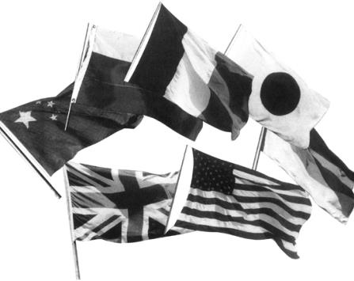

Birleşik Devletler, Büyük Britanya, Fransa, Almanya, Çin, Rusya, Japonya bayrakları
21. yüzyılın son on yılının başlangıcında, Wilsonculuk zafer kazanmış gibi görünüyordu. Komünizmin ideolojik ve Sovyetlerin jeopolitik meydan okumalarının aynı zamanda üstesinden gelinmişti. Komünizme moral bakımından karşı olma amacı, Sovyet yayılmacılığına karşı direnmenin jeopolitik görevi ile birleşmişti. Başkan Bush’un yeni bir dünya düzeni ümidini klasik Wilsoncu terimlerle ilan etmesine şaşmamak gerek:
“Soğuk Savaş’ı aşan bir yeni uluslar ortaklığı düşünüyoruz: Uluslararası ve bölgesel organizasyonlar aracılığıyla danışma, işbirliği ve ortak harekete dayanan bir ortaklık; ilkelerin ve hukukun üstünlüğünün birleştirdiği, maliyetlerin ve yükümlülüğün eşit şekilde paylaşılmasıyla desteklenen bir ortaklık; demokrasiyi, refahı, barışı yaygınlaştırmak ve silahları azaltmak amacında olan bir ortaklık.”{1055}
Bush’un Demokrat halefi Başkan Bili Clinton “demokrasiyi yaygınlaştırma” temasını açıklarken, Amerika’nın amaçlarını benzer terimlerle dile getirmiştir:
“Yeni bir tehlike ve fırsat döneminde, başlıca amacımız, pazar ekonomisine dayalı demokrasilerin dünya topluluğunu genişletmek ve kuvvetlendirmek olmalıdır. Soğuk Savaş sırasında, özgür kurumların yaşamasına yönelen bir tehdidi sınırlandırmak peşinde olduk. Şimdi, o özgür kurumlar altında yaşayan ulusların içinde bulunduğu çemberi genişletmek istiyoruz. Çünkü bizim düşümüz, dünyadaki her kişinin fikir ve enerjisini, birbiriyle işbirliği yapan ve barış içinde yaşayan başarılı demokrasiler dünyasında ifade edebileceği bir gündür.”{1056}
Böylece, bu yüzyılda üçüncü kez olarak Amerika kendi iç değerlerini bütün dünyaya uygulayarak yeni bir dünya düzeni kurma niyetini ilan etmiş oldu. Yine üçüncü kez, Amerika uluslararası sahneye hakim görünüyordu. 1918’de, Wilson’ın gölgesi, müttefikleri, Amerika’ya, onun yanlışlarını dile getiremeyecek kadar bağımlı olduklarından Paris Barış Konferansı üzerine düşmüştü, İkinci Dünya Savaşı sonuna doğru, Franklin Delano Roosevelt ve Truman bütün küreyi Amerikan modeline göre yeniden düzenleyebilecek pozisyondaymış gibi görünüyorlardı.
Soğuk Savaş’ın bitmesi, uluslararası çevreyi Amerika’nın imajına göre yeniden oluşturma yönünde daha da büyük bir heves yarattı. Wilson ülke içinde “yalnızlık” politikası ile sınırlandırılmıştı; Truman ise, Stalinci yayılmacılıkla mücadele etmişti. Soğuk Savaş sonrası dünyada, Birleşik Devletler, kürenin her bölgesine müdahale edebilecek kapasitedeki tek süper devlet olarak kaldı. Ancak güç daha yaygın hale geldi ve askeri kuvvetle ilgili sorunlar azaldı. Soğuk Savaş’taki zafer, Amerika’yı, XVIII. ve XIX. yüzyıl Avrupa devlet sistemine birçok bakımdan benzeyen ve Amerikalı devlet adamlarının ve düşünürlerinin devamlı olarak sorguladıkları uygulamaların yapıldığı bir dünyaya itti. Temel bir ideolojik veya stratejik tehdidin yokluğu, ulusları giderek artan şekilde ulusal çıkarlarına dayalı dış politikalar izlemekte serbest bıraktı. Beş veya altı büyük devlet ve çok sayıda küçük devletten oluşan bir uluslararası sistemde düzen, geçen asırlarda olduğu gibi, rekabet halindeki ulusal çıkarların dengelenmesi ve uzlaşması ile ortaya çıkmak zorundadır.
Hem Bush, hem de Clinton, yeni dünya düzeninden, sanki sokağın köşesinden hemen gidilip alınabilecek bir şeymiş gibi söz ediyorlardı. Gerçekte, söz konusu düzen, halen doğumdan önceki cenin gibidir ve nihai şekli, gelecek yüzyıldan önce görülecek gibi de değildir. Kısmen geçmişin uzantısı, kısmen hiç görülmemiş bir şey olacak olan yeni dünya düzeni, kendisinden öncekiler gibi, üç soruya cevap olarak ortaya çıkacaktır: Uluslararası düzenin temel birimleri nelerdir? Birbiriyle etkileşim araçları hangileridir? Uğruna etkileşim yapılacak amaçlar nelerdir?
Uluslararası sistemler, tehdit altında yaşarlar. Her “dünya düzeni”, devamlı olmak ümidini taşır; terimin kendisinde bir sonsuzluk ifadesi vardır. Ancak içerdiği elemanlar devamlı bir hareket içindedir; gerçekte, her yüzyılla beraber uluslararası sistemlerin ömrü gittikçe azalmıştır. Vestfalya Barışı’ndan doğan düzen 150 yıl yaşadı; Viyana Kongresi’nin yarattığı uluslararası sistem ancak yüzyıl kendisini koruyabildi; Soğuk Savaş’la belirlenen düzen kırk yıl sonra bitti. (Versay uzlaşması, büyük devletler tarafından uygulanan bir sistem olarak hiçbir zaman çalışmadı ve iki savaş arasında bir ateşkes anlaşmasından başka bir şey değildi.) Dünya düzeninin etkileşim kapasitesi ve amaçları, hiçbir zaman bu kadar çabuk, bu kadar derinden veya bu kadar küresel olarak değişmemiştir.
Uluslararası sistemi oluşturan birimler, niteliklerini değiştirdiği zaman, kaçınılmaz bir şekilde bir karışıklık dönemi başlıyor. Otuz Yıl Savaşları büyük ölçüde, gelenek ve evrensellik taleplerine dayanan feodal toplumlardan, raison d’état’ya dayanan modern devlet sistemine geçişle ilgilidir. Fransız Devrimi Savaşları, ortak dil ve kültürle tanımlanan ulus-devlet sistemine geçişe işaret eder. XX. yüzyılın savaşları, Habsburg ve Osmanlı imparatorluklarının dağılması, Avrupa’ya egemen olma iddiası ve sömürgeciliğin son bulması dolayısıyla çıkmıştır. Her geçiş döneminde hak gibi görünen şeyler, birdenbire tarihsel bir hata haline geldi: XIX. yüzyılda çokuluslu devletler, XX. yüzyılda ise sömürgecilik gibi.
Viyana Kongresi’nden beri, dış politika ulusları birbiri ile ilişkilendirmiştir. Böylece “uluslararası ilişkiler” terimi ortaya çıkmıştır. XIX. yüzyılda, bir tek yeni devletin ortaya çıkması (Birleşmiş Almanya) onlarca yıl karışıklık yaratmıştır, İkinci Dünya Savaşı sonundan beri hemen hemen yüz adet yeni devlet doğdu; bunların birçoğu, tarihi Avrupa ulus-devletinden tamamen farklıydı. Sovyetler Birliği’nde komünizmin çöküşü ve Yugoslavya’nın dağılması, yeni yirmi devlet daha ortaya çıkardı ki, birçoğu eskiden kalma kana susamışlığı yeniden canlandırdı.
XIX. yüzyıl Avrupa ulusu ortak dile ve kültüre dayanıyordu ve zamanın teknolojisi göz önüne alındığında, bu devlet ekonomik büyüme ve uluslararası olayları etkilemek için en uygun çerçeveyi sağlıyordu. Soğuk Savaş sonrası dünyada, Birinci Dünya Savaşı’na kadar Avrupa Konferansı’nı oluşturan geleneksel ulus-devletler, küresel rol için gerekli kaynaklara sahip değildiler. Kendilerini Avrupa Birliği’nde bir araya getirme çabalarının başarısı, gelecek nüfuzlarını belirleyecektir. Birleşmiş bir Avrupa, büyük devlet rolü oynamaya devam edecek; ulus-devletlere bölünmüş bir Avrupa, ikincil statüye kayacaktır.
Yeni dünya düzeninin ortaya çıkışıyla ilgili karışıklığın bir bölümü, çok azı ulus-devletlerin tarihi niteliklerine sahipken, en az üç tür, kendisine “ulus” diyen devletin etkileşimde bulunmasından kaynaklanmaktadır. Bir tarafta, Yugoslavya veya Sovyetler Birliği gibi dağılan imparatorlukların etnik parçaları vardır. Takıntı halinde tarihi sorunları ve yüzyıllık kimlik arayışları olan bu devletler, eski etnik rekabette başarılı olmak çabası içine girdiler. Uluslararası düzen, onların ilgilendiği bir şey olmadığı gibi, hayallerin de erişemediği bir şeydir. Otuz Yıl Savaşları’na bulaşan küçük devletler gibi, bağımsızlıklarını korumak ve uluslararası politik düzen gibi daha kozmopolit bir düşünceden uzak olarak kuvvetlerini artırmak peşindedirler.
Bazı sömürgecilik sonrası uluslar ise, başka bir fenomen oluşturuyorlar, birçokları için şimdiki sınırlar, emperyalist güçleri tarafından yönetime kolaylık olmak üzere çizilmiştir. Uzun bir sahil şeridine sahip Fransız Afrika’sı, her biri sonradan birer devlet olan on yedi idari birime ayrılmıştı. Belçika Afrika’sının, (o zaman Kongo, şimdi Zaire deniyor) denize çok dar bir çıkışı vardı ve bu nedenle Batı Avrupa kadar büyük olmasına karşın tek bir birim olarak yönetilmişti. Bu şartlar altında, devlet çoğunlukla ordu anlamına geliyordu ve bu da tek “ulusal” kurumu oluşturuyordu. Bu iddia çökünce, sonuç çoğunlukla iç savaş oluyordu. Eğer XIX. yüzyıl ulus standartları veya Wilson’ın self-determinasyon ilkesi bu uluslara uygulansaydı, radikal ve önceden tahmin edilemez yeni sınırlar çizilmesi kaçınılmaz olacaktı. Onlar için ülkesel status quo’nun alternatifi, sonu gelmeyen ve vahşi bir iç çatışmadır.
Son olarak, kıta tipi devletler vardır ve büyük olasılıkla yeni dünya düzeninin temel birimlerini simgeleyeceklerdir. İngiliz sömürge yönetiminden sonra ortaya çıkan Hindistan, birçok dil, din ve milliyeti bünyesinde bir araya getirmiştir. Hindistan, XIX. yüzyıl Avrupa devletlerinden daha çok komşularının dini ve ideolojik akımlarına karşı hassas olduğundan, dış ve iç politikaları arasındaki çizgi hem farklı, hem de daha zayıftır. Bunun gibi Çin, ortak yazı, ortak kültür ve ortak tarihle bir arada tutulan bir farklı diller mozaiğidir. Eğer XVII. yüzyıl din savaşları olmasaydı, Avrupa da böyle olabilirdi ve eğer Avrupa Birliği destekleyicilerinin umutları gerçekleşirse yine böyle olabilir. Soğuk Savaş devrinin iki süper devleti, hiçbir zaman Avrupa’nın anladığı anlamda ulus-devlet olmadılar. Amerika, çok dil konuşan ulusal bir kompozisyondan farklı bir kültür oluşturmayı başarmıştır; Sovyetler Birliği ise, birçok uluslu bir imparatorluktu. Yerine geçen devletler, özellikle Rusya Federasyonu, bu yazının yazıldığı zamanda dağılmak ile tekrar imparatorluk olmak arasında bölünmüş durumdaydı ki, XIX. yüzyılda Habsburg ve Osmanlı imparatorluklarında da böyle olmuştu.
Bütün bunlar, uluslararası ilişkilerin esasını, metodunu ve hepsinden önemlisi, etki alanını temelden değiştirdi. Modern döneme kadar, kıtalar büyük ölçüde izole durumda hayatlarını sürdürdüler. Örneğin Fransa’nın kuvvetinin, Çin’in kuvveti ile kıyaslanması olanağı yoktu; çünkü iki ülke arasında etkileşme olanağı mevcut değildi. Teknolojinin etki alanı genişleyince, diğer kıtaların geleceği Avrupa büyük devletlerinin “Konferansı” tarafından belirlendi. Hiçbir önceki uluslararası düzen, bütün dünyaya dağıtılmış önemli güç merkezlerine sahip değildirler. Bunun gibi, hiçbir devlet adamı, olayların, liderler ve halk tarafından aynı anda ve aniden yaşandığı bir çevre içinde diplomasiyi yönetmek zorunda kalmamıştı.
Devlet sayısı ve bu devletlerin birbirini etkileme kapasitesi arttığına göre, yeni bir dünya düzeni, hangi prensipler üzerine kurulabilir? Yeni uluslararası sistemin karmaşıklığı göz önüne alındığında, “demokrasiyi yaygınlaştırmak” gibi Wilsoncu kavramlar, Amerikan dış politikası için başlıca rehber olabilir mi ve Soğuk Savaş’ın sınırlandırma stratejisinin yerine geçebilir mi? Açıkça söylemek gerekirse, bu kavramlar ne kesin bir başarı, ne de kesin bir başarısızlık olmuştur. XX. yüzyıl diplomasisinde en güzel hareketlerin bazılarının kökü, Woodrow Wilson’ın idealizmindedir: Marshall Planı, komünizmi sınırlandırma yönündeki cesur kararlılık, Batı Avrupa’nın özgürlüğünün savunulması, hatta kötü kaderli Milletler Cemiyeti ve onun yeniden dünyaya gelişi olan Birleşmiş Milletler.
Wilson idealizmi, aynı zamanda birçok problem doğurdu. On Dört Nokta’da ifade edildiği şekilde, etnik self-determinasyon ilkesinin eleştirilmeden kabulü, güç ilişkilerini hesaba katmakta başarılı olamadı ve etnik grupların dar görüşlü bir şekilde geçmişten kalma rekabet ve nefretlerinin tatmini peşinde koşmalarının istikrarı bozucu etkilerini hesaba katmadı. Milletler Cemiyeti’ne askeri yaptırım mekanizması sağlamaktaki başarısızlık, Wilson’ın ortak güvenlik nosyonundaki temel sorunun altını çizdi. Başarısız 1928 Briand-Kellogg Paktı, (bu pakta göre uluslar bir politika aracı olarak savaşı reddetmişlerdi) hukuki sınırlamalar koymanın limitlerini göstermişti. Hitler’in göstereceği gibi, diplomasi dünyasında, dolu bir tabanca, hukuki bilgiden daha güçlüdür. Wilson’ın, demokrasinin yaygınlaştırılması için Amerika’ya yaptığı çağrı, büyük yaratıcılık doğurdu. Ancak aynı zamanda Vietnam gibi felaketli girişimlere de yol açtı.
Soğuk Savaş’ın sona ermesi, bazı gözlemcilerin “tek kutuplu” veya “bir süper devletli” dediği bir dünya yarattı. Fakat Birleşik Devletler fiilen tek taraflı olarak küresel gündemi dikte edecek daha iyi bir duruma gelemedi. Amerika on yıl öncesine nazaran daha egemen bir durumdadır; fakat kuvvet hayret verecek bir şekilde daha çok dağılmış vaziyettir. Böylece, Amerika’nın kuvvetini, dünyanın geri kalan kısmına şekil vermek için kullanma yeteneği de fiilen azalmıştır.
Soğuk Savaş’ta elde edilen zafer, Wilson’un evrensel ortak güvenlik düşünün uygulanmasını daha çok zorlaştırdı. Potansiyel olarak hakim bir gücün olmaması karşısında, önemli devletler barışa karşı tehditleri aynı şekilde görmedikleri gibi, tanıdıkları bu tehditlerin üstesinden gelmek için aynı riskleri göze almakta da istekli değillerdir. (Bkz. Bölüm 10, 11, 15 ve 16) Dünya toplumu, “barışı korumak” için (yani mevcut bir anlaşmaya taraflardan birisi tarafından karşı çıkılmadığı sürece onu korumak için) işbirliği yapmaya yeter derecede isteklidir. Fakat barışı oluşturmakta, yani dünya düzenine yönelen gerçek tehditleri bastırmakta çok ürkek davranıyorlar. Bu şaşırtıcı bir şey değil, çünkü Birleşik Devletler dahi Soğuk Savaş sonrası dünyada tek taraflı olarak neye karşı direneceği konusunda açık bir kavram geliştirmiş değildir.
Dış politikaya bir yaklaşım olarak, Wilsonculuk, Amerika’nın rakipsiz bir erdem ve güç sahibi olmasıyla kendisini gösteren müstesna bir doğaya sahip olduğunu varsayar. Birleşik Devletler gücünden ve amaçlarının erdeminden o kadar emindi ki, bütün dünyada kendi değer yargıları için savaşmayı hayal ediyordu ve Amerika’nın farklılığına olan inanç da Wilsoncu bir dış politikanın hareket noktası olmalıydı.
XXI. yüzyıl yaklaşırken, büyük küresel güçler, zaman geçtikçe Birleşik Devletler’i daha az farklı yapacaktır. Amerikan askeri gücü görülebilir bir gelecekte de rakipsiz olacaktır. Ancak Amerika’nın gelecek on yıllarda dünyanın tanık olabileceği birçok küçük çaptaki anlaşmazlıkta –Bosna, Somali ve Haiti gibi– bu gücünü kullanmak istemesi, Amerikan dış politikası için kavramsal bir sorun yaratacaktır. Birleşik Devletler’in, gelecek yüzyıla dünyanın en güçlü ekonomisi olarak gireceği büyük bir olasılıktır. Ancak refah da, refahı yaygınlaştıracak teknoloji de çok daha fazla yaygın olacaktır. Birleşik Devletler, Soğuk Savaş sırasında hiç görmediği türde bir ekonomik rekabetle karşılaşacaktır.
Amerika, dünyada en büyük ve en güçlü fakat akranları da olan bir devlet olacaktır; primus interpares (eşitler arasında birinci), fakat diğerleri gibi bir devlet olacaktır. Wilsoncu dış politikanın vazgeçilmez temelini oluşturan Amerika’nın farlılığı inancı, bu nedenle gelecek yüzyılda daha az önem taşıyacaktır.
Amerikalılar, bu durumu, bir nevi acizlik veya ulusal gerilemenin bir işareti olarak görmemelidir. Tarihin uzun bir dönemi boyunca, Birleşik Devletler zaten diğer devletler arasında bir devletti, diğer devletlere hükmeden bir süper devlet değildi. Diğer güç merkezlerinin yükselmesi –Japonya, Çin ve Batı Avrupa’da– Amerikalıları endişelendirmemelidir. Esasen, Marshall Planı’ndan beri dünya kaynaklarını paylaşmak ve diğer toplumların ve ekonomilerin gelişmesi Amerika’nın başlıca hedefi olmuştur.
Ancak Wilsoncu dış politikanın dikte ettiği görüşler –ortak güvenlik, rakibini Amerikalılaştırmak, anlaşmazlıklarda hukuka uygun şekilde karar veren bir uluslararası sistem ve etnik self-determinasyona tam destek– daha az uygulanabilir olursa, gelecek yüzyılda Amerikan dış politikası hangi ilkeler üzerine oturtulmalıdır? Tarihin kılavuz kitabı olmadığı gibi, tam tatmin edici benzetmeler de sunmaz. Ancak tarih, örneklerle öğretir ve Amerika meçhul sularda seyrederken, gelecek on yıllar için ipucu elde etmek istiyorsa Woodrow Wilson’dan önceki dönemi ve “Amerikan yüzyılını” incelemelidir.
Richelieu’niin raison d’état kavramı, yani devletin çıkarlarının, bu çıkarları elde etmek için kullanılan araçları meşru kıldığı görüşü, Amerikalılara daima çirkin gelmiştir. Bu demek değildir ki, Amerika hiçbir zaman raison d’état prensiplerini kullanmadı. Kurucu Babaların cumhuriyetin ilk on yıllarında Avrupa kuvvetleri ile başa çıkmasından, “Manifest Destiny” başlığı altında toplanan ve Batı’ya doğru yayılmayı sağlayan uğraşa kadar bunun birçok örneği vardır. Fakat Amerikalılar kendi bencil çıkarlarını açıkça ortaya koymaktan daima rahatsızlık duymuşlardır. Dünya savaşı yaparken veya bölgesel anlaşmazlıklara karışırken, Amerikan lideri daima çıkar için değil, ilkeler adına mücadele ettiklerini ileri sürmüşlerdir.
Avrupa tarihini araştıran herhangi bir kimse için güç dengesi kavramı çok açıktır. Fakat güç dengesi de raison d’état gibi son birkaç yüzyılın ortaya çıkardığı bir şeydir, ilk kez Fransa’nın yayılmacı hareketlerine gem vurma çabası içindeki İngiliz Kralı III. William tarafından kullanılmış bir terimdir. Zayıf devletlerin, kuvvetli devlete karşı bir araya gelerek karşı ağırlık oluşturmak amacıyla bir koalisyon oluşturması suretiyle denge yaratması, özünde o kadar çarpıcı bir şey değildi. Ancak güç dengesi devamlı dikkat ister. Gelecek yüzyılda, Amerika liderleri, kamuoyları için bir ulusal çıkar kavramını belirlemek ve güç dengesini korumak yoluyla bu çıkara Avrupa ve Asya’da nasıl hizmet edileceğini açıklamak zorunda kalacaklardır. Amerika’nın, dengeyi korumak için dünyanın çeşitli bölgelerinde ortaklara gereksinimi olacaktır ve bu ortaklar her zaman yalnızca moral görüşler dikkate alınarak seçilemezler. Amerikan politikası için, ulusal çıkarın açık bir tanımının temel rehber olması gerekmektedir.
Büyük bir savaş olmaksızın en uzun yaşayan uluslararası sistem, Viyana Kongresi’ni izleyen sistemdir. Sistem, hukuka uygunluğu ve dengeyi, paylaşılan değerleri ve güç dengesi diplomasisini bir araya getirmişti. Ortak değerler ulusların isteklerine gem vururken, denge onlar üzerinde ısrar etme kapasitelerini sınırladı. XX. yüzyılda, Amerika iki kez kendi değerleri üzerine kurulu bir dünya düzeni oluşturmaya çalıştı. Bu, modern dünyada iyi olan birçok şeyin gerçekleşmesini sağlayan kahramanca bir çabadır. Fakat Wilsonculuk Soğuk Savaş sonrası dönemin tek dayanağı olamazdı.
Amerika’nın başlıca ideali olarak, demokrasinin gelişmesi devam edecektir; fakat görünürde felsefi zaferi kazandığı anda karşı karşıya bulunduğu engelleri görmek gerekir. Batılı politika teorisyenlerinin başlıca endişesi, merkezi hükümetin gücünü kontrol altında tutmak iken, diğer birçok toplumda politik teori, devletin otoritesini desteklemeye çalışmıştır. Başka hiçbir ülkede, kişisel özgürlüklerinin yaygınlaştırılması için böyle ısrarlı olunmamıştır. Batı demokrasisi, kültür bakımından homojen topluluklarda uzun bir ortak tarihle gelişmiştir. (Amerika gibi çok dil konuşan bir ülkede bile kuvvetli bir kültürel kişilik geliştirmiştir.) Toplum ve bir anlamda ulus, devletten önce oluşmuştur; yoksa devlet ulusu yaratmamıştır. Böyle bir ortamda, politik partiler temel bir konsensüsün çeşitlemelerini temsil etmektedirler; bugünün azınlığının, yarının çoğunluğu olma potansiyeli vardır.
Dünyanın başka birçok bölgesinde, devlet ulustan önce oluşmuştur; devlet, ulusu oluşturacak başlıca faktördür ve çoğunlukla da böyle kalmıştır. Mevcut oldukları yerlerde, politik partiler genellikle sabit toplumsal kimlikleri yansıtırlar; azınlık ve çoğunluklar devamlı olmak eğilimindedirler. Böyle toplumlarda politik süreç hükmetmekten ibaret olup, seçimle iktidarın el değiştirmesi söz konusu değildir, iktidar değişikliği, eğer olursa, anayasal prosedürle değil, darbelerle olur. Modern demokrasinin esası olan sadık bir muhalefet kavramı çok ender olarak mevcuttur. Daha sık olarak, muhalefet ulusal birlik için bir tehlike olarak görülür ve vatan hainliğiyle eş tutularak acımasızca bastırılır.
Batı tarzı demokrasi, partizanlık sınırlarını oluşturan değerler üzerinde bir konsensüs bulunduğunu varsayar. Amerika, özgürlük fikrinin evrensel uygulaması üzerinde ısrar etmese, kendisine karşı dürüst hareket etmemiş olur. Amerika’nın baskıcı olanlara değil, demokratik hükümetlere öncelik tanıması ve ahlaki kanaatlerden dolayı bir bedel ödemeye hazır olması gerektiği tartışma konusu bile değildir. Demokratik değerleri ve insan haklarını teşvik eden hükümetler ve kurumlar lehine farklı işlem yapılması gerektiği açıktır. Zorluk, ödenecek kesin bedelin belirlenmesinde ve bunun ulusal güvenlik ve genel jeopolitik denge gibi diğer önemli Amerikan öncelikleri ile ilişkilerinde çıkıyor: Amerika’nın teşvikleri vatansever retorikten öteye gidecekse, Amerika’nın yapabileceklerinin gerçekçi bir şekilde değerlendirilmesini gerekir. Amerika’nın mali ve askeri kaynakları, küresel bir dış politika uygulaması için kısıtlamaya uğruyorsa, moral yükümlülüklerini artırmamaya dikkat etmesi gerekir. Genel açıklamaların ardından onları desteklemek yeteneği veya istekliliği gelmiyorsa, bu durum Amerika’nın diğer işlerdeki etkisini de azaltır.
Amerikan dış politikasının moral ve stratejik elemanları arasındaki hassas denge soyut olarak belirlenemez. Fakat akıl, bu ikisi arasında bir denge kurulmasını gerektirir. Amerika, ne kadar güçlü olursa olsun, hiçbir ülke bütün tercihlerini dünyanın geri kalan insanlarına kabul ettirme kapasitesine sahip değildir; öncelikler oluşturulmalıdır. Bunun için yeterli kaynak varsa bile, Amerikan halkı bunun getirdiği yükümlülükleri ve bağlantıları anlayınca, ayrım gözetmeyen Wilsonculuk devam ettirilemez. Bunun, çok az risk içeren açıklamalar yoluyla zor jeopolitik seçimlerden kaçınmak için bir slogana dönüşmesi tehlikesi vardır. Amerikan politikasında, iddialar ile bu iddiaları destekleme istekliliği arasında bir fark ortaya çıkması tehlikesi mevcuttur; bunun sonucu olan hemen hemen kaçınılmaz hayal kırıklığı ise kolaylıkla bütün dünya işlerinden çekilmek için bir bahane oluşturabilir.
Soğuk Savaş sonrası dünyada, Amerikan idealizminin yeni karışıklıklar arasında yolunu bulabilmesi için jeopolitik analiz mayasına gereksinimi vardı. Bu kolay bir iş olmayacaktır. Amerika, nükleer tekele sahip olduğu zaman bile egemen olma olanağım reddetmişti ve Soğuk Savaş sırasında çıkar küreleri diplomasisini yürütürken bile güç dengesini hor görmüştür. XXI. yüzyılda, diğer devletler gibi Amerika da zorunluluklar ve tercihler, uluslararası ilişkilerin değişmezleri ile devlet adamlarının takdirine bağlı unsurlar arasında gemisini yürütmeyi öğrenmek zorundadır.
Değerler ile zorunluluklar arasında denge kurulduğunda, dış politikanın neyin hayati çıkar olduğunu belirlemesi gerekir. Uluslararası çevrede gerçekleşen ve ulusal güvenliği yıkacak bir değişikliğe karşı, tehdit ne şekil alırsa alsın ve ne kadar hukuka uygun görünürse görünsün direnilmelidir. En görkemli günlerinde Büyük Britanya, Benelux Ülkelerindeki Manş limanlarının, azizler tarafından yönetilse bile bir büyük devlet tarafından işgal edilmesini önlemek için savaşa girmeyi göze alırdı. Amerikan tarihi boyunca, Monroe Doktrini Amerikan ulusal çıkarının bir tanımlaması olarak hizmet etmiştir. Woodrow Wilson’ın I. Dünya Savaşı’na girişinden beri Amerika, değişikliğe değil, değişikliğin kuvvet kullanılması yoluyla yapılmasına karşı olduğu gerekçesiyle ulusal çıkan tanımlamaktan kaçınmıştır. Bunlardan hiçbirisi artık yeterli değildir; Monroe Doktrini çok kısıtlayıcıdır, Wilsonculuk hem belirsiz, hem de çok hukukidir. Soğuk Savaş sonrası devrede hemen hemen bütün Amerikan askeri harekâtını çevreleyen tartışmalar gösteriyor ki, Amerika’nın çizgiyi nerede çekmesi gerektiği konusunda daha geniş bir konsensüse gereksinimi vardır. Bunu gerçekleştirmek, ulusal liderliğin karşı karşıya bulunduğu en önemli sorundur.
Jeopolitik olarak Amerika, kaynakları ve nüfusu Birleşik Devletler’den çok fazla olan büyük kara parçası Avrasya’nın kıyılarından uzak bir adadır. Avrasya’nın iki başlıca küresinin –Avrupa ve Asya– herhangi birinin tek bir büyük devlet tarafından egemenlik altına alınması, Soğuk Savaş olsun veya olmasın Amerika için stratejik tehlikenin iyi bir tanımını oluşturur. Çünkü böyle bir gruplaşma, Amerika’yı, ekonomik ve sonunda askeri bakımdan geçebilir. Bu tehlikeye karşı, egemen güç, iyi niyetli de olsa direnilmelidir. Çünkü niyetler değişince, Amerika etkili bir direnme yapamayacak derecede kapasitesini yitirmiş ve olaylara yön vermekten aciz bir konumda kalabilir.
Amerika, Sovyet yayılmacılığı tehdidi ile Soğuk Savaş’a itildi ve Soğuk Savaş sonrası beklentilerinin çoğunu, komünizm tehlikesinin ortadan kalkması üzerine inşa etti. Sınırlandırma perspektifinden Sovyet düşmanlığına karşı takındığı tavrın, Amerika’nın küresel düzene karşı takındığı tavrı da belirlemesi gibi, Soğuk Savaş sonrası dünya düzenine ilişkin düşüncelerini de Rusya’nın reform çabaları belirledi. Amerikan politikası, barışın ancak Rusya’nın demokrasiye yönelmesi ve enerjisini pazar ekonomisinin gelişmesine sarf etmesi ile güvence altına alınacağı varsayımı üzerine dayandırılmıştı. Bu düşüncenin ışığı altında, Amerika’nın başlıca görevinin, Rus reformlarını kuvvetlendirmek olduğu anlaşılıyor ki, bunu yaparken, geleneksel dış politika örneklerinden değil, Marshall Planı deneyimlerinden çıkarılan sonuçlardan yararlanacaktı.
Hiçbir ülkeye yönelik Amerikan politikası, o ülkenin potansiyeline veya siyasi eğilimlerine göre değil de, niyetlerinin değerlendirilmesine göre ayarlanmamıştır. Franklin Roosevelt, barış içinde bir savaş sonrası dünya için ümitlerini Stalin’in makul ölçüde ılımlı olmasına bağlamıştı. Soğuk Savaş sırasında, Amerikan stratejisinin –sınırlandırma politikası– ilan edilen amacı, Sovyetlerin niyetlerinin değiştirilmesi olarak kabul edildi. Bu konu ile ilgili tartışma, genellikle Sovyet niyetlerinde beklenen değişikliğin olup olmadığı üzerindeydi. Savaş sonrası başkanlar arasında yalnızca Nixon, istikrarlı bir şekilde, Sovyetler Birliği’ni bir jeopolitik sorun olarak değerlendirmiştir. Reagan bile Sovyet liderlerinin değişmesine bel bağlamıştı. Şaşırtıcı olmayan bir şekilde, komünist çöküşten sonra, düşmanca niyetlerin ortadan kalktığı varsayıldı ve Wilsoncu gelenek çatışan çıkarları reddettiğine göre, Amerika’nın Soğuk Savaş sonrası politikası, sanki artık geleneksel dış politika görüşleri geçerli değilmiş gibi yürütüldü.
Jeopolitik ve tarih öğrencileri bu yaklaşımın tek yönlülüğünden dolayı endişelidirler. Amerika’nın Rusya’nın iç gelişmesine şekil verme kapasitesini olduğundan fazla tahmin ederek gereksiz bir şekilde Rusya’nın iç anlaşmazlıklarına karışması, milliyetçi bir karşı harekete neden olması ve her zamanki dış politika görevlerini ihmal etmesinden korkmaktadırlar. Daha çok, Rusya’nın geleneksel haşin tutumunu değiştirmeyi hedef alan bir politikayı tercih ederler ve bu nedenle ekonomik yardımı ve dünya sorunlarında işbirliği gerektiren projeleri desteklerlerdi. Ayrıca, Rusya’nın kim tarafından yönetilirse yönetilsin, Halford Mackinder’in jeopolitik merkez dediği topraklar üzerine oturmuş olduğunu ve en güçlü imparatorluk geleneklerinden birinin varisi durumunda bulunduğunu da ileri sürebilirler.{1057} Varsayılan moral dönüşüm olsa bile bu zaman alacaktır ve bu arada Amerika’nın kozlarını elinde tutması gerekir.
Amerika, Rusya’ya ekonomik yardımdan, Marshall Planı’ndaki gibi, bir sonuç elde etmeyi de beklememelidir. Savaş sonrası dönem Batı Avrupası’nın işleyen bir pazar sistemi, yerleşmiş bir bürokrasisi ve birçok ülkede demokratik bir geleneği vardı. Batı Avrupa, Sovyetler Birliği’nden gelen askeri ve ideolojik tehdit nedeniyle Amerika ile bağlantılıydı. Atlantik ittifakı kalkanı arkasında, ekonomik reformlar temel jeopolitik gerçeğin tekrar ortaya çıkmasına neden oldu; Marshall Planı, Avrupa’nın geleneksel iç yönetim yapısının tekrar kurulmasına yardımcı olmuştur.
Soğuk Savaş sonrası Rusya’sında bu şartlardan hiçbiri mevcut değildir. Çekilen sıkıntıları hafifletmek ve ekonomik reformları teşvik etmek Amerikan dış politikasının önemli araçlarıdır; ancak uzun bir yayılmacı geçmişi olan bir ülke ile küresel bir dengeyi korumak ciddi çabaların yerine geçecek bir şey değildir.
Bu yazı yazıldığı sırada, iki yüzyılda meydana gelen büyük Rusya imparatorluğu dağılma aşamasındadır. 1917-1923 döneminde de görülen bu durumdan, geleneksel yayılmacı ritmini hiç değiştirmeden kurtulmayı başarmıştı. Çürümekte olan bir imparatorluğun çöküşünü yönlendirmek diplomasinin en zor işlerinden biridir. XIX. yüzyıl diplomasisi Osmanlı İmparatorluğu’nun çözülmesini yavaşlattı ve bunun genel bir savaşa dönüşmesini önledi; XX. yüzyıl diplomasisi, Avusturya-Macaristan İmparatorluğu’nun dağılmasının sonuçlarını sınırlamakta başarısızlığa uğradı. Çöken imparatorluklar genellikle iki türlü gerginlik yaratırlar: imparatorluk merkezinin zayıflığından yararlanmak isteyen komşuların girişimleri ve gerilemekte olan imparatorluğun çevrede otoritesini sağlamak için yaptığı çabalar.
Her iki süreç de eski Sovyetler Birliği’nin yerine geçen devletlerde aynı zamanda devam etmektedir. Nüfusunun çoğunluğu Müslüman olan Orta Asya Cumhuriyetleri’nde İran ve Türkiye rollerini artırmak peşindedirler. Fakat hakim jeopolitik hamle, eskiden Moskova tarafından kontrol edilen bütün topraklarda üstünlüğü sağlamak için Rusya tarafından yapılmıştır. Rusya barışın korunması adına bir nevi vasilik kurma çabası içinde olup, “reformcu” bir hükümetin iyi niyeti üzerinde dikkatini odaklayan ve jeopolitik bir gündemle karşılaşmak istemeyen Birleşik Devletler buna göz yummaktadır. Amerika, Baltık devletleri dışındaki cumhuriyetlerin uluslararası bir kabul görmesi için çok az şey yapmıştır. Yüksek düzeydeki Amerikan yetkililerinin bu ülkeleri ziyareti çok az ve seyrektir; yardım en alt düzeyindedir. Toprakları üzerindeki Rus birliklerinin mevcudiyetine ve hatta hareketlerine de çok ender olarak karşı çıkılmaktadır. Moskova, de facto imparatorluk merkeziymiş gibi davranmakta ve kendisini bu pozisyonda görmektedir.
Bunun bir nedeni, Amerika’nın, eski Sovyet imparatorluğu toprakları üzerinde gerçekleşen anti-komünist ve anti-emperyalist devrimleri, sanki bunlar tek bir fenomenmiş gibi görmesidir. Gerçekte bunlar, ters yönde çalışıyorlar. Komünist karşıtı devrim, eski Sovyetler Birliği topraklarının tamamında önemli şekilde destekleniyordu. Rus hegemonyasına karşı yapılmakta olan anti-emperyalist devrim ise, yeni Rus olmayan cumhuriyetlerde geniş şekilde destek görmekteydi ve bu akım, Rusya Federasyonu’nda çok kötü karşılanıyordu. Rus liderleri, tarihi olarak devletlerini “medenileştirme” misyonu ile birlikte algıladıklarından (Bkz. Bölüm 7 ve 8), politik görüşleri ne olursa olsun, Rusya’nın ileri gelen şahsiyetlerinin büyük bir çoğunluğu Sovyet İmparatorluğu’nun çöktüğünü ve yerine gelen devletlerin hukuka uygunluğunu kabul etmiyordu. (Özellikle Rus Ortodokslarının beşiği olan Ukrayna) Aleksandr Soljenitsin bile isteksiz yabancı uyrukların yükünden Rusya’nın kurtarılması üzerine yazarken, hemen hemen eski imparatorluğun yüzde 90’mı oluşturan Ukrayna, Beyaz Rusya ve Kazakistan’ın yarısını içeren toprakların Moskova tarafından korunmasını salık veriyordu.{1058} Eski Sovyetler Birliği toprakları üzerinde her komünizm karşıtının demokrat ve her demokratın da Rus emperyalizmine karşı olduğunu söylemek zordur.
Realist bir politika şunu gösterir ki, Boris Yeltsin’in reformcu Rus hükümeti bile, Rus ordularını, ev sahibi ülkelerin karşı görüşüne rağmen, hepsi Birleşmiş Milletler üyesi olan yeni cumhuriyetlerin topraklarında tutmaktadır. Bu askeri kuvvetler bazı cumhuriyetlerin iç savaşlarına da karışmışlardı. Rus dışişleri bakanı, tekrar tekrar “yakın yabancı ülkeler”deki barışı koruma görevinin Rusya’nın tekelinde olduğunu ileri sürmüştür. Bu terim, Moskova hegemonyasının yeni bir girişiminden farklı bir şey değildir. Barış için uzun vadeli ümitler Rus reformlarından etkilenecektir; fakat kısa vadeli ümitler, Rus ordularının kendi ülkelerinde kalmaya ikna edilip edilmeyeceğine bağlıdır. Bu ordular, eski imparatorluğun Avrupa ve Ortadoğu sınırları boyunca yeniden görülürse, Rusya ile komşuları arasındaki korku ve ortak kuşku ile kuvvetlenmiş tarihi gerginlik kuşkusuz yeniden doğacaktır. (Bkz. Bölüm 6 ve 7)
Rusya’nın, eski imparatorluk topraklarının ötesindeki topraklardan farklı olarak “yakın yabancı ülkeler” dediği ülkelerde –Eski Sovyetler Birliği Cumhuriyetleri– özel bir güvenlik çıkarı olması kaçınılmazdır. Fakat dünya barışı, bu ilginin askeri baskı olmadan veya tek taraflı askeri müdahale olmadan tatminini ister. Kilit sorun, Rusya’nın yeni cumhuriyetlerle ilişkisinin dış politikanın kabul edilmiş kurallarına bağlı bir uluslararası problem olarak mı işlem göreceği, yoksa Amerika’nın ancak Rus liderliğinin iyi niyetine hitap ederek etkileyebileceği Rusya’nın tek taraflı karar verme mekanizmasının dışa doğru uzantısı olarak mı değerlendirileceği sorunudur. Bazı bölgelerde –örneğin İslam köktenciliğinin tehdidi altındaki Orta Asya Cumhuriyetleri’nde– Birleşik Devletler’in ulusal çıkarı, en azından İran köktenciliğine bir direnmeyi sürdürdüğü sürece büyük bir olasılıkla Rusya’nınkiyle paraleldir. Bu konudaki işbirliği, geleneksel Rus emperyalizmine dönüşmediği sürece devam edebilir.
Bu yazı yazıldığı sırada, Rusya’da demokrasi ümidi henüz belirgin olmadığı gibi, demokratik bir Rusya’nın uluslararası istikrara yardımcı olan tarzda hareket edip etmeyeceği de açık değildir. Dramatik tarihi boyunca Rusya, Batı’nın geri kalan bölümünden tamamen farklı bir yönde yürümüştür. Rusya’nın hiç bağımsız bir kilisesi olmamıştır; Reformasyon, Aydınlanma, Keşifler Çağı’nı kaçırmış, modern pazar ekonomisini hiç bilememiştir. Demokratik deneyimi olan liderleri azdır. Yeni cumhuriyetlerdeki gibi hemen hemen bütün Rus liderleri, komünizm zamanında yüksek konumlar elde etmiş kişilerdir; çoğulculuğa meyletmek ilk içgüdüleri olmadığı gibi, sonuncusu da olmayabilir.
Bundan başka, merkezi planlamadan pazar ekonomisine geçiş her yerde sancılı olmuştur. Müdürlerin pazarla ve teşviklerle ile ilgili hiçbir deneyimleri yoktur; işçiler motivasyonlarını kaybetmişlerdir; bakanlar, hiçbir zaman para politikası ile ilgilenmemişlerdir. Ekonomik durgunluk, hatta gerileme kaçınılmazdır. Hiçbir merkezi planlama ekonomisi, pazar ekonomisi yolunda acı istikrar programından kaçamamıştır ve birçok Amerikalı uzman danışmanların bir anda her şeyden mahrum kalmayı içeren önerileri ile problem daha da şiddetlenmiştir. Geçiş döneminin ekonomik ve sosyal maliyetinin yarattığı hoşnutsuzluk, komünist dönemi sonrası Polonya, Slovakya ve Macaristan’da komünistler için kazançlı olmuştur. 1993 Rus parlamento seçimlerinde, komünist ve milliyetçi partiler birlikte oyların yaklaşık yüzde 50’sini aldılar.
Samimi reformcular bile, geleneksel Rus milliyetçiliğinde, hedeflerini gerçekleştirmek için birleştirici bir kuvvet görebilirler. Üstelik Rusya’da milliyetçilik, tarihi olarak misyonerce ve imparatorluk yanlısı olmuştur. Psikologlar, nedenin, kökleri derinlere nüfuz etmiş güvensizlik duygusu mu, yoksa doğuştan gelen saldırgan tabiat mı olduğunu tartışabilirler. Rus yayılmacılığının kurbanları için fark akademiktir. Rusya’da, demokratikleşme ve kontrollü bir dış politikanın el ele yürümesi zorunlu olmayabilir. Rus iç reformları ile barışın sağlanacağı argümanının, Doğu Avrupa, İskandinavya veya Çin’de çok az taraftar bulmasının ve Polonya, Çek Cumhuriyeti, Slovakya ve Macaristan’ın Atlantik İttifakı’na katılmak için bu kadar hevesli olmasının nedeni budur.
Dış politika eğilimlerine göre ayarlanmış bir hareket biçimi, önceden görülebilen eğilimlere göre karşı ağırlık yaratmak peşinde olur ve bütün kozları iç reformlar için kullanmazdı; Rus serbest pazarını ve Rus demokrasisini desteklerken, Rus yayılmacılığına karşı da engeller oluşturmaya çalışılırdı. Ayrıca Rusya’nın tarihinde ilk kez olarak ulusal topraklarının gelişmesi üzerine eğilmesiyle Rus reformunun kuvvetlendirileceği de ileri sürülebilirdi. Sonuçta, St. Petersburg’dan Vladivostok’a kadar on bir saat bölgesi boyunca uzanan ulusal topraklarla, klostrofobi (kapalı bir yerde bulunma fobisi) duyması için hiçbir neden yoktur.
Soğuk Savaş sonrası dönemde, komünizm sonrası Rusya’ya karşı Amerikan politikası, bütün kozlarını kişisel liderlere göre ayarlanmış bir nevi sosyal mühendisliğe yatırmıştır. Bush Yönetimi zamanında bu Mihail Gorbaçov ve Clinton Yönetimi’nde ise, Boris Yeltsin oldu. Her ikisi de demokrasiye kişisel bağlılıkları olduğu algılaması dolayısıyla barışsever bir Rus dış politikası ve Rusya’nın uluslararası toplumla bütünleşmesi için kişisel garantörler olarak görüldüler. Bush, Gorbaçov’un SSCB’si için üzülmüştür ve Clinton, Rusya’nın eski nüfuz küresini canlandırmak için gösterdiği çabalara göz yummuştur. Amerikalı liderler, Yeltsin’in (daha önce Gorbaçov’un) varsayılan milliyetçi karşıtlarını kışkırtma korkusuyla Rus politikası üzerinde geleneksel diplomatik frenleri kullanmakta çekingen davranmışlardır.
Rus-Amerikan ilişkileri, ümitsiz bir şekilde dış politika sorunları üzerinde ciddi bir diyalog gereksinimi içindedir. Rusya’ya dış politikanın normal ölçülerinden bağışıkmış gibi davranmak Rusya’ya iyilik yapmak değildir; çünkü bu tutum, başka hareketlere girişmesi halinde Rusya’yı geri çekilemeyecek ve daha ağır bir bedel ödeyecek durumda bırakabilir. Amerikan liderlerinin Amerikan ve Rus çıkarlarının nerede birleşip nerede ayrıldığı konusunda açık bir konuşma yapmaktan çekinmemesi gerekir. Rusya’nın iç kavgasının eski emektarları, kendileri ile konuşulunca yüzü kızaran rahibe adayları olmadığına göre, iç dengeler realist diyaloglarla sağlanabilir. Birbirinin ulusal çıkarlarına karşı ortak bir saygı üzerine oturan bir politikayı anlayacak kadar yeteneklidirler. Gerçekte, böyle bir hesabı, soyut ve uzak ütopizm önerilerinden daha iyi anlayacak durumdadırlar.
Rusya’yı uluslararası sisteme entegre etmek, ortaya çıkan uluslararası düzende çok önemli kilit bir görevdir. Bu işin dengede tutulması gereken iki unsuru vardır: Rusya’nın davranışlarını ve hesaplarını etkilemek. Cömert ekonomik yardım ve teknik danışma hizmetleri, geçiş döneminin sancılarını hafifletmek için gereklidir ve Rusya Avrupa Güvenlik Konferansı gibi ekonomik, kültürel ve politik işbirliğini destekleyen kurumlarda iyi karşılanmalıdır. Fakat Rus reformu, tarihi imparatorluk heveslerinin yeniden ortaya çıkmasına gözleri kapamak suretiyle yardım görmemeli, engellenmelidir. Birleşmiş Milletler tarafından tanınan yeni cumhuriyetlerin bağımsızlıkları, topraklarındaki Rus askeri hareketlerine rıza göstermek suretiyle değersizleştirilmemelidir.
Amerika’nın Rusya’ya karşı politikası, Rus iç politikasının iniş ve çıkışına göre değil, daimi çıkarlara göre ayarlanmalıdır. Amerikan dış politikası, Rus iç politikasını en yüksek öncelikli konu olarak kabul ederse, kontrolü dışındaki kuvvetlerin kurbanı olur ve karar vermede dayanacağı kriterleri kaybeder. Dış politika, devrimci sürecin her titreşimine göre mi kendini ayarlayacak? Amerika, iç politikada onaylamadığı bir şey olduğu zaman Rusya ile ilişkisini kesecek mi? Birleşik Devletler, aynı zamanda hem Rusya’yı, hem de Çin’i izole edebilir mi ve iç tercihleri uğruna Çin-Sovyet ittifakı olasılığını yeniden canlandırmaya katlanabilir mi? Bu aşamada daha az iç politikaya giren bir Rusya politikası, sonradan daha istikrarlı ve uzun vadeli bir yola izin verecektir.
Bölüm 28’de “psikiyatrik” olarak tanımladığım dış politika ekolünü savunanlar, böyle argümanları “kötümser” olarak reddetme eğilimindedirler; Almanya ve Japonya’nın karakterlerini değiştirdiklerini, Rusların da değiştirebileceklerini söylemektedirler. Fakat şu da doğru ki, demokrat Almanya, 1930’lu yıllarda ters yönde değişmişti ve Almanya’nın iyi niyetine inananlar birdenbire onu karşılarında bulmuşlardı.
Bir devlet adamı, gelecek hakkındaki en uygun tahminleri yaparak önündeki çıkmazları geçiştirebilir; sınavlardan birisi de, kötü ve hatta öngörülemeyen tehlikelere karşı kendisini savunma yeteneğidir. Yeni Rus liderliğinin, iki kuşak boyunca süren komünist yanlış yönetiminin üstesinden gelmek çabalarının acı verici olduğunun anlayışla karşılanmasını beklemeye hakkı vardır. Ancak 300 yıl boyunca geniş Rus sınırları etrafında çarların ve komiserlerin yarattığı nüfuz küresinin kendilerine verileceğini beklemeye hakları yoktur. Rusya, yeni bir dünya düzeninin kurulmasında ciddi bir ortak olmak istiyorsa, bunun yararlarına olduğu kadar istikrar önlemlerine de hazır olması gerekmektedir.
Hayati çıkarın genel kabul gören bir tanımlamasına en yaklaşan Amerikan politikası, Atlantik bölgesindeki müttefiklerine karşı uyguladığı politikadır. Her ne kadar Kuzey Atlantik Antlaşması Örgütü genellikle bir ittifak olarak değil, Wilsoncu terimlerle ortak güvenliğin bir aracı olarak açıklanıyorsa da, gerçekte NATO, Amerika’nın moral ve jeopolitik hedeflerini en çok uyumlaştıran bir kurumu temsil etmektedir (Bkz. Bölüm 16) NATO, Avrupa’da Sovyet hegemonyasına engel olmak amacıyla kurulduğundan, ne tür bir gerekçe gösterilirse gösterilsin, Avrupa ve Asya’daki kuvvet merkezlerinin düşman bir ülkenin egemenliği altına girmesini önlemeye hizmet etmiştir.
Atlantik İttifakı’nın mimarlarına, Soğuk Savaş’ta kazanılan zaferin yarattıkları organizasyonun geleceği hakkında kuşkular yaratacağı söylenmiş olsa idi, çok şaşırırlardı. Soğuk Savaş’taki zaferin ödülünün sonsuz bir Atlantik ortaklığı olması gerektiğini bir hakmış gibi düşünmüşlerdi. Soğuk Savaş’ın politik kavgalarının bazıları bu amaç uğruna verilmiş ve kazanılmıştı. Bu süreç içinde, Amerika, Avrupa’ya, devamlı danışma kurumları ve entegre olmuş askeri bir kumandanlıkla bağlanmış oluyordu. Bu, koalisyonlar tarihinde etki alanı ve süresi bakımından benzeri görülmemiş bir yapıydı.
Soğuk Savaş’ın sonundan beri modası geçen nostaljik terim olan Atlantik Topluluğu, komünizminin çöküşünden sonra günlerini saymaktadır. Avrupa ile ilişkileri değersiz görmek çok moda oldu. Demokrasinin yaygınlaştırılması üzerinde durulmakta ise de, Amerika şimdilerde benzer kurumları olan ve insan hakları ve diğer temel değerlere karşı ortak tavırlar paylaştığı toplumlarla dünyanın başka bölgeleriyle olduğundan daha az ilgilenmektedir. Atlantik bağlarını kuran Truman, Acheson, Marshall ve Eisenhower, Avrupa tarzı diplomasi hakkında Amerikan rezervlerinin çoğunu paylaşmışlardır. Fakat şunu anladılar ki, Atlantik bağları olmasa, Amerika, kendisini, Batı yarımküresi hariç, çok az moral bağ ve ortak geleneği olan bir uluslar dünyasında bulacaktı. Bu şartlar altında, Amerika geleneğine ters düşen su katılmamış bir Realpolitik uygulamak zorunda kalacaktı.
Bir zamanlar en hayati Amerikan politikası olan NATO ile ilişkilerdeki gerilemenin bir nedeni de NATO’nun artık fazla ilgi gerektirmeyen bir bölgenin parçası olarak kabul edilmesidir. Belki daha da önemlisi, son on beş yıl içinde başkanlığa kadar yükselen kuşağın çoğunluğunun Güney ve Batı eyaletlerinden gelmiş olmaları ve bu insanların eski Kuzeydoğu eyaletlerine göre, Avrupa ile duygusal ve kişisel bağlarının daha az olmasıdır. Bundan başka, Wilsonculuk bayrağını taşıyan Amerikan liberalleri, sık sık ortak güvenlik ve uluslararası hukuktan çok, ulusal çıkar prensiplerini uygulayan demokratik müttefikleri tarafından terk edilmiş oldukları hissini yaşamışlardır. Ayrıca ortak değerlere karşın uzlaşmaya varılamamasının örneği olarak Bosna ve Ortadoğu’daki başarısızlıkları göstermektedirler. Aynı zamanda, Amerikan tutucularının yalnızcı kanadı –farklılık inancının başka bir şekli– Avrupa Makyavelci rölativizmi ve bencilliği olarak hor gördükleri bu hareketlere karşı arkalarını dönme eğilimi gösterdiler.
Avrupa ile bazı konulardaki anlaşmazlıklar, aile içi kavga özelliğini taşır. Hemen hemen bütün kilit sorunlarda, en çok işbirliği yine diğer bölgelerden değil Avrupa’dan gelmiştir. Doğruyu söylemek gerekirse, retorik tam tersi izlenim bıraktıysa da, Bosna’da Fransız ve İngiliz birlikleri savaş sahasındaydı, Amerikalılar değil. Körfez Savaşı’nda ise, Amerikalı olmayan en kalabalık birlikler, bir kez daha, İngiliz ve Fransız birlikleriydi. Bir kuşak içinde iki kez, paylaşılan değerler ve çıkarlar Amerikan birliklerini Avrupa’ya getirmişti. Soğuk Savaş sonrası dünyada Avrupa, yeni Amerikan politikasını desteklemeyebilir; fakat Amerika, üç kuşağın politikalarını zafer saatinde terk etmemeyi kendisi için görev kabul etmelidir, ittifakın karşısındaki görev, Atlantik ilişkisine şekil veren iki temel kurum olan Kuzey Atlantik Antlaşması Örgütü (NATO) ile Avrupa Birliği’ni (eski Avrupa Ekonomik Topluluğu) Soğuk Savaş sonrası dünyanın gerçeklerine adapte etmektir.
NATO, Amerika ile Avrupa’yı bağlayan başlıca kurumsal bağdır. NATO oluşturulduğu zaman, Rus birlikleri, bölünmüş Almanya’da Elbe kıyılarındaydı. Konvansiyonel kuvvetleri ile Batı Avrupa’yı işgal edebileceğine inanılan Rus ordusu, kısa zamanda atom silahları da üretmeye başladı. Soğuk Savaş boyunca, Batı Avrupa’nın güvenliği Amerika tarafından sağlandı ve Soğuk Savaş sonrası NATO kurumlan hâlâ bu durumu yansıtır. Birleşik Devletler, bir Amerikan generalinin kumandası altındaki entegre edilmiş kumandanlığı kontrolü altında tutmaktadır ve savunmaya farklı bir Avrupa kimliği getirmek isteyen Fransız girişimlerine karşı çıkmıştır.
Avrupa bütünleşmesi hareketinin doğuşunda iki öneri vardı: Avrupa tek bir ses halinde konuşmayı öğrenemezse, yavaş yavaş ikincil bir konuma doğru kayacaktı ve bölünmüş Almanya, iki blok arasında yüzme ve Soğuk Savaş’ın taraflarını birbirlerine karşı kullanma pozisyonuna getirilmemeliydi. Avrupa Birliği’nin başlangıçta altı üyesi varken, bu yazı yazıldığı sırada on iki üyesi olmuştur ve İskandinavya, Avusturya ve nihai olarak eski Sovyet uydularının bazılarını içine alacak şekilde genişleme süreci içindedir.
Bu iki kurumun üzerinde kurulduğu şartlar, Sovyetler Birliği’nin çöküşü ve Almanya’nın birleşmesi ile sarsıldı. Sovyet ordusu artık yoktur ve Rus ordusu yüzlerce mil doğudadır. Rusya’nın içinde bulunduğu karışıklık, yakın bir gelecekte Batı Avrupa’ya saldırı olasılığını ortadan kaldırmıştır. Aynı zamanda, Rusların eski imparatorluğu yeniden kurmak eğilimleri, özellikle eski Doğu Avrupa uydu devletlerinde Rus yayılmacılığı hakkındaki tarihi korkuyu yeniden uyandırmaktadır. Rusya’ya komşu olan hiçbir ülkenin lideri, Rusya’nın değişmesiyle, ülkelerinin güvenliğinin sağlanacağı yönündeki Amerikan inancını paylaşmamaktadır. Herkes, iki olası tehditten daha az tehlikeli olduğu için Boris Yeltsin’i karşıtlarına tercih etmektedir; yoksa onu tarihi güvensizliklerini ortadan kaldıracak bir kişi olarak görmemektedirler.
Birleşmiş bir Almanya’nın doğuşu da bu korkuları artırmaktadır, iki kıta devinin, tarihi olarak komşularını parçaladıkları veya onların topraklarında savaştıklarını hatırlayan ve ikisi arasında bulunan devletler, doğan güvenlik boşluğundan çok korkmaktadırlar; bu nedenle NATO üyeliğinde ifadesini bulan Amerikan korumasını istemektedirler.
NATO Sovyet gücünün çöküşüne adapte olmak gereksinimi içindeyse, Avrupa Birliği de, Avrupa bütünleşmesinin kalbindeki sözsüz uzlaşmayı tehdit eden birleşmiş bir Almanya gerçeği ile yüz yüze gelmektedir: Federal Almanya, Avrupa Topluluğu’nda, Fransızların politik liderliğini kabul etmesi karşılığında ekonomik işlerde tam bir söz hakkına sahipti. Böylece, Federal Cumhuriyet, NATO içindeki stratejik işlerde Amerikan liderliği kanalıyla ve Avrupa Birliği’ndeki politik sorunlarda Fransız liderliğini kabul ederek Batı’ya bağlanmıştır.
İlerideki yıllarda bütün geleneksel Atlantik ilişkileri değişecektir. Avrupa’nın eskisi gibi Amerika korumasına gereksinimi olmayacak ve ekonomik çıkarının daha saldırgan bir şekilde izleyicisi olacaktır; Amerika, Avrupa güvenliği için fedakârlık yapmaya istekli olmayacak ve çeşitli görünüşler içinde yalnızlığa eğilim gösterecektir; zamanı gelince, Almanya askeri ve ekonomik gücünün kendisine sağlaması gereken politik nüfuza sahip olmak isteyecektir ve duygusal olarak artık Amerikan askeri ve Fransız politik desteğine bağlı olmayacaktır.
Bu eğilimler, Adenauer geleneğinin mirasçısı olan (Bkz. Bölüm 20) Helmut Kohl iktidarda olduğu sürece tamamen belirgin olmayacaktır. Ancak o da bu tip liderlerin sonuncusunu temsil etmektedir. Yeni yetişen kuşak, savaşı ve yerle bir edilmiş durumdaki savaş sonrası Almanya’sının kalkındırılmasındaki Amerikan rolünü kişisel olarak bilmez. Uluslar üstü kurumlara kendisini bağlamak ve görüşlerini, Amerika veya Fransa’nın görüşlerinden sonra ikinci sıraya koymak için duygusal bir nedenleri yoktur.
Amerikalı ve Avrupalı liderlerin savaş sonrası kuşaklarının en büyük başarısı, Amerika’nın organik olarak Avrupa’ya bağlanmaması durumunda, sonradan Atlantik’in her iki yakası için daha kötü şartlar altında müdahale etmek zorunda kaldığını anlamaları olmuştur. Bugün bu görüş daha da çok doğrudur. Almanya o kadar çok güçlenmiştir ki, bugünkü mevcut Avrupa kurumlan, Almanya ile Avrupalı ortakları arasındaki bir denge kuramaz. Aynı zamanda, Almanya’yla birlikte bir Avrupa bile, Sovyet dağılması sonrasının en tehdit edici iki sonucunu, yani Rusya’nın yeniden dirilişini veya dağılışını kendi başına yönlendiremez.
Almanya ile Rusya’nın birbirlerini, kendilerinin başlıca ortağı veya başlıca düşmanı olarak tanımlamaları başka hiçbir ülkenin çıkarına değildir. Birbirlerine çok yakın olursa, ortak hâkimiyet korkusu yaratırlar; kavga ederlerse, krizi tırmandırmak için Avrupa’yı da işin içine sokarlar. Amerika ve Avrupa’nın, Almanya ve Rusya’nın gem vurulmamış ulusal politikalarının kıtanın merkezinde çekişmelerim engellemekte ortak çıkarı vardır. Amerika olmadan, Büyük Britanya ve Fransa Batı Avrupa’da politik dengeyi savunamaz; Almanya milliyetçiliğe kayabilir ve Rusya’nın küresel rakibi olamaz. Avrupa olmadan da Amerika psikolojik, coğrafi ve jeopolitik olarak Avrasya kıyılarından uzak bir adaya dönüşebilir.
Soğuk Savaş sonrası düzeni, NATO nedeniyle üç tür problemle karşı karşıyadır: Geleneksel ittifak yapısı içindeki iç ilişkiler; Atlantik devletlerinin, Doğu Avrupa’daki eski Sovyetler Birliği uydu devletleri ile ilişkileri ve son olarak, Sovyetler Birliği’nin yerine geçen devletlerin, özellikle Rus Federasyonu’nun, Kuzey Atlantik ve Doğu Avrupa ülkeleri ile ilişkileri.
Kuzey Atlantik ittifakı içindeki iç ilişkilerin ayarlanması, Amerika ve Fransa’nın Atlantik ilişkileriyle ilgili görüşleri arasındaki bitmez tükenmez çekişmenin etkisi altındadır. Amerika, NATO’ya entegrasyon bayrağı altında egemen olmuştur. Avrupa’nın bağımsızlığını savunan Fransa, Avrupa Birliği’ne şekil veren ülkedir. Anlaşmazlıklarının sonucu, askeri alanda Amerika’nın rolünün Avrupa’ya politik bir kimlik kazandırmayacak kadar çok egemen olması, Fransa’nın rolünün NATO’da birlik sağlamayacak kadar Avrupa politik otonomisinde ısrarlı olması olmuştur.
Entelektüel olarak, tartışma Richelieu kavramları ile Wilson fikirleri arasındaki çatışmayı tekrarlamaktadır. Yani, çıkarları dengelemek şeklinde dış politika ile temel bir uyum olduğunu varsayan diplomasi arasında çatışmadır. Amerika için, entegre NATO kumandanlığı, müttefikler arasındaki birliğin ifadesi olmuştur; Fransa için bu durum, bir savaş flamasıdır. Amerikan liderleri, bir ülkenin en zor zamanda müttefikini terk etmek seçeneğini elinde tutmak istemiyorsa, neden bağımsız hareket konusunda bu kadar çok ısrarlı olduğunu anlamakta zorluk çekiyorlar. Fransa ise Amerika’nın, Avrupa’nın bağımsız askeri rolü konusunda bu derece huzursuz olmasını, Amerika’nın gizlice egemen olma duygusuna yoruyordu.
Aslında her iki ortak da kendi tarihinden kaynaklanan uluslararası ilişkiler kavramına göre hareket ediyordu. Fransa, 300 yıl önce başlatmış olduğu Avrupa tarzı diplomasinin varisidir. Büyük Britanya güç dengesinin koruyucusu rolünü terk etmek zorunda kalırken, Fransa raison d’état politikalarını ve soyut uyumluluğun izleyicisi olmak yerine kesin çıkar hesapçısı olmayı desteklemeye devam ediyor. Amerika, kısa bir dönem için de olsa, ısrarla Wilsonculuğu uyguladı. Temel bir uyumun var olduğuna inanmış olan Amerika, Avrupa ve Amerikan hedeflerinin aynı olması dolayısıyla Avrupa’nın özerkliğinin gereksiz veya tehlikeli olduğunda ısrar etti.
Çağdaş dönemin iki büyük Avrupa sorunu, –birleşmiş bir Almanya’nın Batı ile bütünleşmesi ve Atlantik İttifakı’nın yeni Rusya ile ilişkileri– Richelieu veya Wilson devlet adamlığından birisinin uygulanması ile çözülemez. Richelieu yaklaşımı, Avrupa ülkelerinde milliyetçiliği teşvik ediyor ve parçalanmış bir Avrupa’ya doğru gidişe neden oluyor. Su katılmamış Wilsonculuk ise, Avrupa kimlik duygusunu zayıflatır. ABD’ye muhalefet etmeye dayanan Avrupa kurumları oluşturma girişimi, sonunda hem Avrupa birliğini, hem de Atlantik tutumunu yıkacaktır. Diğer taraftan, Birleşik Devletler’in NATO içinde daha güçlü bir Avrupa kimliğinden korkmasına gerek yoktu; çünkü Amerika’nın politik ve lojistik desteği olmadan herhangi çapta ve herhangi bir yerde bir bağımsız Avrupa askeri hareketini hayal etmek zordur. Sonuçta, birliği sağlayan entegre kumandanlık değil, paylaşılan politik ve güvenlik çıkarlarıdır.
Birleşik Devletler ile Fransa, Wilson idealleri ile Richelieu idealleri arasındaki uzlaşmazlık, gelişen olaylarla ortadan kaldırılmış oldu. Hem Atlantik ittifakı hem de Avrupa Birliği, yeni ve istikrarlı dünya düzeninin birbirinden ayrılmaz yapı bloktandır. NATO, nereden gelirse gelsin askeri şantaja karşı en iyi korunma organizasyonudur; Avrupa Birliği ise Orta ve Doğu Avrupa’nın istikrarı için önemli bir mekanizmadır. Her iki kurum da Sovyetler Birliği’nin eski uyduları ve yeni devletleri ile barışçı bir uluslararası düzen arasında bağlantı kurmak için gereklidir.
Doğu Avrupa’nın geleceği ile Sovyetler Birliği’nin yerine geçen devletlerin geleceği aynı sorun değildir. Doğu Avrupa, Kızıl Ordu’nun işgaline uğramıştır. Doğu Avrupa kendisini, kültür ve politika bakımından Batı Avrupa gelenekleriyle birlikte tanımlıyordu. Bu, Polonya, Çek Cumhuriyeti, Macaristan ve Slovakya’dan oluşan Visegrad devletleri için özellikle doğrudur. Batı Avrupa ve Atlantik kurumlarıyla bağları olmazsa, bu ülkeler Almanya ile Rusya arasında hiçbir kimseye ait olmayan bölge konumuna geleceklerdir. Bu bağların anlam ifade etmesi için, bu ülkelerin hem Avrupa Birliği’ne, hem de Atlantik İttifakı’na üye olmaları gerekir. Ekonomik ve politik bakımdan yaşayabilmesi için, Avrupa Birliği’ne gereksinmeleri vardır; ve güvenlik bakımından Atlantik Antlaşması’na dönmüşlerdir. Gerçekte, bu kurumlardan birinde üye olmak, öbür kurumda da üyelik anlamına geliyor. Avrupa Birliği’nin üyelerinin çoğu NATO’nun da üyesi olduğundan ve Avrupa bütünleşmesi belli bir noktaya geldikten sonra, üyelerinden birine karşı yapılan bir saldırıya diğer üyelerin kayıtsız kalması olası olmadığından, Avrupa Birliği’nde üyeliğin, şöyle veya böyle, sonunda NATO güvencesinin en azından de facto olarak genişlemesine yol açması doğaldır.
Şimdiye kadar, her iki kurum için de Doğu Avrupa ülkelerinin üyeliği bloke edilmiş olduğundan bu problemden kaçınılmıştır. Ancak bu kararın arkasındaki gerekçe, Avrupa ve Amerikan politik gelenekleri arasındaki kadar farklıdır. Avrupa, Avrupa Birliği’ni doğuya doğru genişletme kararını Realpolitik’e dayandırdı. Avrupa onları da içine almayı kabul etmiş ve Doğu Avrupa ülkelerine, ekonomilerinde reform yapmaları için ortak üyelik önermişti (Bu süreç içinde, Batı Avrupa ekonomilerini bir müddet daha rekabetten korumak amacındaydı.) Bu durum, nihai üyeliği, zamanla çözümlenecek şekilde teknik bir sorun haline getirirdi.
Bu ülkelere NATO üyeliğinin verilmesine Amerika’nın karşı koyması, bir ilke sorunudur. Çatışma beklentisine dayandıkları gerekçesiyle ittifaklara karşı olan Wilsoncu görüşe dönülerek, Başkan Clinton Ocak 1994’teki NATO zirvesinde alternatif bir görüş ileri sürdü. Birleşik Devletler’in, Polonya, Macaristan, Çek Cumhuriyeti ve Slovakya’nın NATO üyeliğine neden karşı olduğunu açıklarken, Atlantik İttifakı’nı, “gelecek bir çatışmanın kehanetini yaratarak Doğu-Batı arasında yeni bir hat çizemeyeceğini” söyledi. “...Avrupa’da daha doğuya doğru bir çizgi çizmemizi isteyen Avrupa’daki ve Birleşik Devletler’deki herkese şunu söylüyorum: Avrupa için en güzel gelecek olasılığını şimdiden kapatmamalıyız. Öyle bir gelecek ki, her yerde demokrasi, pazar ekonomisi ve ortak güvenlik için insanların işbirliği olacak.”{1059}
Bu ruh hali içinde, Başkan Clinton, Barış için Ortaklık denen bir plan ortaya koydu. Bu plan, Sovyetler Birliği’nin yerine geçen bütün devletleri ve Moskova’nın eski Doğu Avrupa uydularının hepsini, belirsiz bir ortak güvenlik sistemine katılmaya davet ediyordu. Wilsonculuk ile Wallace’in Bölüm 16’da anlatılmış olan sınırlandırma politikası eleştirisinin bir karışımı olan bu sistem, ortak güvenlik prensiplerini uygulamaktadır; Sovyet ve Rus emperyalizminin kurbanları ile suçlularını aynı kefeye koymakla Afganistan sınırındaki Orta Asya Devletleri ile Polonya’yı aynı statüye tâbi tutmaktadır ki, Polonya Rusya’nın katıldığı dört bölünmenin kurbanı olmuştur. Barış için Ortaklık genellikle yanlış değerlendirildi. Bu NATO’ya giden yolda bir istasyon değildir; nasıl Locamo Antlaşması (Bkz. Bölüm 11) 1920’li yıllarda Fransa’nın istediği İngiliz-Fransız ittifakına bir alternatif olmuşsa, Barış için Ortaklık da NATO üyeliğinin alternatifidir.
Ancak Locarno, ortak bir maksada dayanan bir ittifak ile ortak bir tehdit kavramına değil de, iç yönetimin belirlenen şartlarının yerine getirilmesine dayanan çok taraflı bir kurum arasında orta bir yol olmadığını göstermiştir. Barış için Ortaklık, Avrupa’da iki çeşit sınır yaratma tehlikesi taşıyor: Güvenlik garantileri ile korunmuş olanlar ve bu garantilerin verilmesi reddedilenler. Bu durumun potansiyel saldırganlar için cesaret verici ve potansiyel kurbanlar için moral bozucu bir durum olması kaçınılmazdır. Çatışmadan kaçınmak için, Doğu ve Orta Avrupa’da stratejik ve kavramsal olarak çok tehlikeli olan hiç bir kimseye ait olmayan bölge oluşturulmamalıdır. Bu, birçok Avrupa çatışmasının nedeni olmuştur.
Doğu Avrupa’nın güvenliği ve Rusya’yı uluslararası topluma entegre etme şeklindeki ikili güvenlik problemini aynı programın bir parçası olarak çözmek imkânsızdır. Barış için Ortaklık NATO’nun bir başka yüzü olarak kurulmuşsa, NATO’yu realist güvenlik misyonu ile ilgisiz bazı faaliyetlere sokmak, Doğu Avrupa’da güvensizlik duygusunu daha da büyütmek ve yine yeterli derecede belirgin olmadığından Rusya’yı yatıştıramamak sonucunda Atlantik İttifakı’nı ortadan kaldırabilir. Gerçekten de Barış için Ortaklık, potansiyel saldırı kurbanları tarafından tehlikeli değilse bile, faydasız olarak değerlendirilme tehlikesi içermektedir. Asya’da ise, öncelikle Çin’e ve Japonya’ya karşı bir etnik kulüp gibi algılanabilir.
Aynı zamanda, Rusya’nın Atlantik ittifakı devletleri ile bağlantı kurması da önemlidir. Barış için Ortaklık denen bir kuruma, bütün üyelerinin aynı şekilde yorumlayacağı işlerle uğraşmak koşuluyla yer olabilir. Böyle ortak işler, ekonomik kalkınma, eğitim ve kültür işlerinde mevcuttur. Avrupa Güvenlik ve işbirliği Konferansı’na bu amaçla genişletilmiş fonksiyonlar verilebilir ve adı Barış için Ortaklık olarak değiştirilebilir.
Bu amaçla, Atlantik ittifakı ortak bir politik çerçeve oluşturabilir ve toptan güvenliği sağlayabilir; Avrupa Birliği eski Doğu Avrupa uydu devletlerinin üyeliğini hızlandırabilir ve Kuzey Atlantik işbirliği Konseyi (NACC) ve Avrupa Güvenlik ve İşbirliği Konferansı, belki Barış için Ortaklık şeklinde yeni bir isim altında eski Sovyetler Birliği cumhuriyetleri ile –özellikle Rusya Federasyonu– Atlantik İttifakı yapısı arasında bağlantı kurabilir. Güvenlik şemsiyesi, Doğu Avrupa’daki yeni demokrasilere de uzatılabilir. Rusya sınırları içinde uslu durursa, güvenlik üzerinde odaklanan dikkatler zamanla ortaklığa çevrilebilir. Ortak politik ve ekonomik projeler, Doğu-Batı ilişkilerini gittikçe artan bir şekilde meşgul edebilir.
Atlantik ilişkilerinin geleceği Doğu-Batı ilişkilerinde değil, XXI. yüzyılın öngörülebilir gelişmeleriyle Amerika’nın nasıl baş edeceğinde yatmaktadır. Bu yazı yazıldığı sırada, hangi yükselen kuvvetlerin, en hakim veya en tehdit edici olacağını söylemek olanaksızdır: Rusya mı, Çin mi yoksa köktenci İslam mı? Fakat Amerika’nın bu gelişmelerden herhangi birisiyle başa çıkma yeteneği, Kuzey Atlantik devletlerinin işbirliğiyle artacaktır. Bu şekilde, “bölge dışı” denilen sorunlar, Kuzey Atlantik ilişkilerinin özünü oluşturacaktır ki, örgütün bu amaca göre tekrar organize olması gerekmektedir.
Amerika’nın Asya’ya olan ilgisi, 1993’te Asya hükümet başkanlarının katılımı ile yapılan bir toplantıda, Clinton tarafından yapılan Pasifik Topluluğu önerisi ile sembolize edilen büyük bir atılıma sahne oldu. Fakat “topluluk” terimi Asya’ya yalnız çok dar anlamda uygulanabilmektedir; çünkü Pasifik’teki ilişkiler Atlantik bölgesindekinden temelde çok farklıdır. Avrupa ulusları ortak kurumlarda gruplaşırken, Asya ulusları kendilerini uzak ve rakip durumda tutarlar. Asya’nın başlıca ulusları arasındaki ilişkiler, XIX. yüzyıl Avrupa güç dengesi sisteminin birçok özelliğini taşır. Birisinin gücünün artışı, diğerleri tarafından hemen manevralarla dengelenmeye çalışılır.
Buradaki joker, tıpkı Büyük Britanya’nın XX. yüzyılın iki dünya savaşına kadar Avrupa güç dengesini koruması gibi hareket edebilecek kapasiteye (felsefeye değil) sahip olan Amerika’dır. Asya-Pasifik bölgesinin övünülen refahının dayanağı olan istikrarı, bir doğa kanunu olmayıp, Soğuk Savaş sonrasında artan bir şekilde dikkat ve özen isteyen bir dengenin sonucudur.
Wilsonizmin Asya’da çok az taraftarı vardır. Ortak savunma veya işbirliğinin paylaşılan iç değerler üzerine dayandırılması gibi sözler yoktur. Hatta çok az olan demokrasilerde de böyle bir şey yoktur. Vurgu, denge ve ulusal çıkar üzerindedir. Askeri harcamalar başlıca Asya ülkelerinde artmaya başlamıştır. Çin süper devlet statüsü yolundadır. Yüzde 8’lik kalkınma hızı ile (1980’li yıllardakinden daha az) Çin’in Gayri Safi Milli Hasılası XXI. yüzyılın ilk yirmi yılının sonunda Amerika’nınkine yaklaşacaktır. Bu tarihten çok önce Çin’in politik ve askeri gölgesi, Asya üzerine düşecek ve Çin’in politikası ne kadar kontrollü olursa olsun, bu durum diğer güçlerin hesaplarını etkileyecektir. Diğer Asya ülkeleri, tıpkı şimdi Japonya’ya yaptıkları gibi, gittikçe güçlenen Çin’e karşı denge ağırlığı oluşturma çabası içinde olacaklardır. Her ne kadar bunu inkâr ederlerse de, Güneydoğu Asya ülkeleri, şimdiye kadar korkulan Vietnam’ı bile Çin ve Japonya’yı dengelemek için kendi gruplarında hesaba (ASEAN) katmaktadırlar. Yine bu yüzden ASEAN, Birleşik Devletler’in bölgeyle ilgisini devam ettirmesini istemektedir.
Japonya’nın rolü, kaçınılmaz bir şekilde değişen şartlara adapte olacaktır. Ulusal stillerine uygun olarak davranan Japon liderleri, görünüşe göre kendiliğinden oluşacak nüanslara göre ayarlamalar yapacaklardır. Soğuk Savaş sırasında tarihi kendi kendiyle yetinme tutumlarını terk eden Japonya, Birleşik Devletler’in korumasını kabul etmiştir. Kararlı bir ekonomik rakip olan Japonya, dış ve güvenlik politikalarını Washington’a havale ederek ekonomik alanda manevra serbestliğinin bedelini ödemiştir, iki ülke de Sovyetler Birliği’ni, güvenliklerine karşı en önemli tehdit olarak kabul ettiği sürece Amerika ve Japonya’nın ulusal çıkarlarının aynı olduğunu kabul etmek doğaldı.
Bu örnek, büyük bir olasılıkla devam etmeyecektir. Askeri gücü artan Kore ve Çin ile Sibirya’ya yerleşmiş ve kuvvetinden bir şey kaybetmemiş Sovyet askeri gücü karşısında, Japonların uzun vadeli planlamacıları, Amerikan ve Japon çıkarlarının aynı olduğunu sonsuza kadar verilmiş bir hak olarak kabul edemezler. Her yeni gelen Amerikan yönetimi mevcut politikaların yeniden gözden geçirileceğini (veya en azından onların değişikliğe açık olduğunu) söyleyerek işe başlarken ve ekonomik sorunlarda çatışma, istisna olmaktan çok, kural olduğuna göre, Amerikan ve Japon dış politika çıkarlarının hiçbir zaman birbirinden ayrılmayacağını ileri sürmek zordur. Her durumda, Asya kıtası ile ilgili olarak Japonya’nın perspektifi, coğrafi yakınlık ve tarih deneyimi dolayısıyla Amerika’nınkinden farklıdır. Bu nedenle, Japon savunma bütçesi yavaş yavaş dünyanın en büyük üçüncü bütçesi olana kadar büyümüştür ve Rusya’nın iç problemleri göz önüne alındığında, belki de dünyanın en etkin ikinci savunma bütçesidir.
1992’de Japon Başbakanı Kiichi Miyazawa’ya, Japonya’nın bir Kuzey Kore nükleer kapasitesini kabul edip etmeyeceği sorulduğu zaman, cevabı Japonlara hiç uygun olmayan bir şekilde direkt ve kısa idi: “Hayır.” Bu, Japonya’nın kendi nükleer kapasitesini geliştireceği anlamına mı geliyor? Yoksa Kuzey Kore’nin kapasitesini engellemeye çalışacağını mı söylemek istiyor? Bu soruların sorulabilmesi bile, Japonya’nın, bir dereceye kadar Amerikan güvenliğinden ve dış politika bağlarından kopma olasılığının var olduğunu gösteriyor.
Diğer büyük devletlerle ilgili daha da sivri analizlerin yapılabilmesi, Asya dengesinin çok oynak ve hatta tehlikeli olabileceğini gösteriyor. Bu durumda Birleşik Devletler, Asya dengesini korumak için bu denge tehlikeye girinceye kadar beklemeyecektir. Politikası, bütün mevcut Asya forumlarını etkileyebilecek kadar esnek olmalıdır. Bir dereceye kadar, bu halen olmaktadır. ASEAN’da (Güneydoğu Asya için) yardımcı bir rol ve Asya-Pasifik Ekonomik işbirliğinde (APEC) önemli bir katılım sağlamıştır.
Fakat bu tür çok taraflı kurumlarda Amerika’nın etkisinin sınırları belli olmuştur. Daha kurumsal ve Avrupa modeline uygun bir Pasifik Topluluğu şeklindeki Clinton’un önerisi, nazik bir ilgisizlikle karşılanmıştır; çünkü Asya ulusları kendilerini topluluk olarak görmemektedirler. Potansiyel Asya süper devletlerine, hatta ABD’ye, kendi işlerinde önemli bir söz hakkı sağlayacak kurumsal bir çerçeve istememektedirler. Asya ulusları, Amerikan fikir alışverişine açıktırlar; aynı zamanda Amerika’nın yeter derecede işlerine karışmasını da isterler; çünkü tehlikeli bir durumda, bağımsızlıklarına karşı olan tehditleri onun vasıtasıyla savuşturabilirler. Fakat güçlü komşularından da çok kuşkuludurlar ve tüm Pasifik’i içine alan resmi kurumlara olumlu yaklaşmayacak kadar Birleşik Devletler’den de kuşkuludurlar.
Bu nedenle, Amerika’nın olaylara yön verme yeteneği, öncelikle Asya’nın başlıca ülkeleri ile olan ikili ilişkilerine bağlıdır. Bu yazı yazıldığı sırada üzerinde çok kavga edilmekte olan Amerika’nın Japonya ve Çin’e karşı politikası da bu yüzden çok büyük önem arz etmektedir. Öncelikle Amerika’nın rolü, birbirinden kuşku duyan Japonya ve Çin’in bir arada yaşamalarına yardımcı olmuştur. Yakın bir gelecekte yaşlanan nüfusu ve durağanlaşan ekonomisi ile karşı karşıya kalacak olan Japonya, Çin bir süper güç olarak ortaya çıkmadan ve Rusya kuvvetini toplamadan önce teknolojik ve stratejik üstünlüğünü kullanmaya karar verebilir. Sonra da büyük dengeleyiciye, yani nükleer teknolojiye yönelebilir.
Her iki olasılıkla ilgili olarak, yakın Japon-Amerikan ilişkileri, Japon ılımlılığı ve Asya’nın diğer devletlerine güvence vermek bakımından çok önemli bir katkıda bulunacaktır. Amerika ile ilişkili Japon askeri gücü, Çin’i ve diğer Asya devletlerini, tamamen Japon nitelikli ulusal askeri olanaklardan daha az endişelendirmektedir. Ayrıca Japonya, öncekinden daha az olsa da Amerikan güvenlik ağı olduğu müddetçe, daha az askeri güce gereksinimi olduğuna karar verecektir. Kuzeydoğu Asya’da (Japonya ve Kore) önemli bir Amerikan askeri mevcudiyetine gerek olacaktır. Böyle bir kuvvetin yokluğunda, Amerika’nın Asya’daki devamlı rolüne bağlılığı inanılırlıktan yoksun kalacak ve Japonya ile Çin milliyetçi bir hareket tarzı izlemeye devamlı bir şekilde heveslendirilerek, sonuçta birbirlerine ve aradaki tampon ülkelere yöneleceklerdir.
Paralel jeopolitik çıkarlar bazında Japon-Amerikan ilişkilerine tekrar canlılık ve açıklık kazandırmak önemli engellerle karşılaşacaktır. Ekonomik anlaşmazlıklar zaten bildiğimiz şeydir; kültürel engeller daha da sinsi olabilir. Bunlar, karar vermekle ilgili değişik ulusal yaklaşımlarda acı veren ve zaman zaman insanı deli eden şeylerdir. Amerika, statü bazında karar veren bir ülkedir; yetkili birisi, genellikle başkan, ara sıra dışişleri bakanı, konumunun gücüne göre mevcut seçeneklerden birisini seçer. Japonya ise, konsensüse göre hareket eder. Başbakan dâhil hiç kimse tek başına karar verme yetkisine sahip değildir. Kararı uygulaması gereken herkes konsensüsün oluşumuna katılır ve herkes mutabık olmadan karar alınmış sayılmaz.
Bütün bunlar, bir Amerikan başkanı ile bir Japon başbakanı arasındaki toplantılarda yanlış anlama yüzünden daha da büyüyen temel farklılıkları ortaya çıkarır. Amerikan başkanı mutabakatın bildirince, işin böyle yapılacağını ima etmiş olur; Japon başbakanı mutabakatını bildirirse, bu Amerika’nın konumunu kabul ettiğini değil, bunu anladığını ve konsensüs grubuna götüreceğini gösterir. Otoritesinin bundan öteye geçmediğinin açık olduğunu varsayar. Asya’nın geleceği hakkındaki görüşmelerde, Amerika’nın çok sabırlı olması ve Japonya’nın da gelecek işbirliğinin dayanacağı uzun vadeli politikaları görüşmek için hazır olması gerekmektedir.
Gariptir ki, Japon-Amerikan ilişkilerinin sağlamlığı, Çin-Amerikan ilişkisinin ters yüzüdür. Çin kültürüne karşı akılcı yakınlığına rağmen, Japonya, hayranlık ve korku, dostluk arzusu ve egemen olmak hevesi arasında kararsızlık içinde kıvranmıştır. Çin-Amerikan gerginliği, Japonya’yı Birleşik Devletler ile bağlarını koparmaya heveslendiriyor. Bunun amacı, Çin’deki etkisini artırmak değilse bile, en azından Amerika’nın liderliğini çok yakından takip ederek bunu azaltmamaktır. Aynı zamanda, tam bir Japon ulusal yaklaşımı, Pekin tarafından, Japonya’nın hegemonya kurmak konusundaki iştahının bir belirtisi olarak yorumlanması riski taşımaktadır. Bu nedenle, Çin’le Amerika’nın iyi ilişkiler içinde olması, hem Japonya ile Amerika’nın, hem de Çin’le Japonya’nın iyi ilişkiler içinde olmasının ön şartıdır. Bu öyle bir üçgen ki, taraflardan herhangi birisi ancak büyük bir tehlikeyi göze almak şartıyla ayrılabilir. Ayrıca, ulusları kesin bir şekilde dost veya düşman olarak ayırmak eğiliminde olan Amerika’yı çok rahatsız eden bir belirsizlik de yaratacaktır.
Bütün büyük ve potansiyel olarak büyük devletler içinde en fazla yükseleni Çin’dir. Birleşik Devletler zaten en güçlüsüdür. Avrupa daha büyük bir birliği bir araya getirmek zorundadır. Rusya sendeleyen bir devdir ve Japonya, zengin, fakat çekingen bir ülkedir. Çin’e gelince, ekonomik büyümesi yıllık yüzde 10 olan, kuvvetli bir ulusal birlik duygusuna ve daimi büyüyen bir askeri güce sahip bulunan bu ülke, büyük devletler arasında en hızlı büyüyeni olacaktır. 1943’te, Roosevelt Çin’i “Dört Polis”den biri olarak öngörmüştü; fakat hemen peşinden Çin bir iç savaşın karışıklığı içine daldı. Bu karışıklıktan ortaya çıkan Maoist Çin, bağımsız bir büyük devlet olmak niyetindeydi; fakat ideolojik engelleri dolayısıyla düş kırıklığına uğradı, ideolojik çırpınmalarını geride bırakan Çin’in reformcu liderleri, Çin’in ulusal çıkarlarını hünerli bir inatçılıkla korudular. Çin’le çatışma politikası, Amerika’nın Asya’da izole olması tehlikesini içerir. Hiçbir Asya ülkesi, Çin’le yanlış yönlendirilen Amerikan politikasının bir sonucu olarak gördüğü bir anlaşmazlık olduğunda Amerika’yı desteklemez veya destekleyemez. Böyle bir durumda, Asya devletlerinin büyük bir çoğunluğu, istemeseler bile Amerika ile ortaklığı az veya çok kesmeyi yeğlerler. Çünkü hemen hemen her ülke, Çin ve Japonya’yı içerecek istikrarlı bir uzun vadeli çerçeve yaratılması için yüzünü Amerika’ya çevirmiştir ve bir Çin-Amerikan çatışması her iki ülke için de bu olasılığı ortadan kaldırır.
En uzun bağımsız dış politika tarihine sahip ülke olan ve dış politikasını geleneksel olarak ulusal çıkar üzerine oturtan Çin, korkulan komşuları Rusya ve Japonya’ya ve daha az da olsa Hindistan’a karşı bir denge oluşturduğu için, Amerika’nın Asya işlerine karışmasını memnunlukla karşılamaktadır. Ancak hem Pekin’le, hem de Pekin’de Çin güvenliğine potansiyel tehdit olarak algılanan diğer ülkelerle aynı zamanda dostluk oluşturma peşinde olan Amerikan politikası –Birleşik Devletler bakımından doğru bir politikadır– Washington ile Pekin arasında dikkatli ve düzenli bir diyalog gerektirir.
1989’da Tiananmen Meydanı olaylarından sonra dört yıl boyunca, bu diyalog Amerikalıların yüksek düzeyde temasları reddeden tutumu dolayısıyla durdu. Böyle bir tutum, Soğuk Savaş’ın en şiddetli zamanlarında bile Sovyetler Birliği’ne uygulanmamıştı. Böylece, insan hakları sorunu Çin-Amerikan ilişkilerinin merkezine kaydı.
Clinton Yönetimi akıllıca bir şekilde yüksek seviyede temasları tekrar başlattı; Çin-Amerikan ilişkilerinin geleceği bu nedenle bu temasların sonucuna bağlıdır. Açıktır ki Birleşik Devletler insan haklarına ve demokratik haklara olan geleneksel ilgisini bırakamaz. Sorun Amerika’nın değerlerinin savunulması meselesi değil, Çin-Amerikan ilişkilerinin ne dereceye kadar bu değerlere bağlanacağı sorunudur. Çin, Amerikan-Çin ilişkilerinin karşılıklı çıkar dengesi üzerine değil, Washington’un takdirine göre açılan veya kapatılan tercihlere dayandırılmasından hoşnut değildir. Böyle bir tavır, Amerika’yı hem güvenilmez, hem de içişlerine karışan durumuna sokuyor ki, güvenilmezlik Çinlilerin gözünde en büyük kusurdur.
Bölgesinde (ve dünyada) tarihi olarak üstün bir konumda olduğu bilinen Çin’de, başkalarının kendi kurumları ve iç uygulamaları ile ilgili önerileri büyük tepki ile karşılanır. Bu genel duyarlılık, tarihinde Batı’nın Çin işlerine karışmasıyla daha da büyüdü. XIX. yüzyılın başlarında Çin’in kuvvet kullanılarak dünyaya açıldığı Afyon Savaşı’ndan beri, Batı, Çinlilerin gözünde sonu gelmeyen aşağılamaları yapanlar olarak görülmüştür. Statüde eşitlik ve yabancı önerilerine boyun eğmemekte gösterilen hırçınlık, Çin liderleri için bir taktik değil, moral bir zorunluluktur.
Çin’in Birleşik Devletler’den istediği şey, güçlü ve açgözlü bulduğu komşularına karşı denge sağlayacak stratejik bir ilişkidir. Bu düzeyde dış politika koordinasyonunu sağlamak için, Çin insan hakları konusunda bazı ödünler vermeye razı edilebilir; ancak bunları kendi hür iradesi ile yapıyormuş gibi bir hava içinde hareket edilmelidir. Fakat Amerika’nın kamuya açıklanan şartların oluşmasındaki ısrarı, Çin’de hem Çin toplumuna Amerikan değerlerinin empoze edilmesi ve böylece aşağılanması, hem de Amerika’nın ciddiyetten uzak bir tutumu olarak değerlendirilmektedir. Çünkü bu tavır, Amerika’nın Asya dengesinde ulusal çıkarı bulunmadığı izlenimi vermektedir. Eğer Amerika’ya böyle bir ulusal amaç için güvenilemezse, Çin’in ödün vermekte hiçbir çıkarı yoktur. Çin-Amerikan ilişkisinin kilit noktası, –insan haklarında bile– küresel ve özellikle Asya stratejisinde sözsüz bir işbirliğidir.
Avrupa’yla ilgili olarak, Amerika her ne kadar bir değerler birliğini Avrupa ile paylaşıyorsa da, henüz ortak bir politika veya Soğuk Savaş sonrası dönem için uygun kurumlar oluşturamamıştır; Asya’yla ilgili olarak, Amerika için arzu edilen genel bir stratejiyi tanımlamak olasıdır, fakat bir değerler birliği oluşturmak mümkün değildir. Ancak beklenmeyen bir şekilde Batı Yarımküresi’nde, moral ve jeopolitik amaçların Wilsonizm ve Realpolitik’in birbirine karıştığı bir ortam doğmaktadır.
Batı Yarımküresi’nde Birleşik Devletler’in ilk dış politikası, özünde bir Büyük Devlet müdahaleciliğiydi. Franklin Roosevelt’in 1933’te açıklanan iyi Komşuluk politikası işbirliğine dönüşüm işaretini vermiştir. 1947 Rio Antlaşması ve 1948 Bogota Paktı, Amerikan Devletleri Örgütü’nde kurumlaştırılan güvenlik unsurunu sağlamıştır. Başkan Kennedy’nin 1961 ilerleme için İttifak’ı dış yardım ve ekonomik işbirliği unsurlarını getirmiştir. Fakat bu uzak görüşlü politika, yardım alanların devletçi tutumları yüzünden başarısızlığa mahkûm olmuştur.
Soğuk Savaş sırasında, Latin Amerika devletlerinin birçoğu, otoriter, çoğunlukla askeri hükümetler tarafından yönetiliyordu ve bu hükümetler çoğunlukla ekonomilerinde devlet kontrolünü benimsiyorlardı. 1980’li yılların ortalarında başlamak üzere, Latin Amerika ekonomik durgunluğunu silkinerek üzerinden attı ve şaşılacak bir birlik içinde demokrasiye ve pazar ekonomisine doğru ilerlemeye başladı. Brezilya, Arjantin ve Şili, demokratik yönetim için askeri hükümetleri bıraktı. Orta Amerika iç savaşlarını sona erdirdi. Düşüncesiz borçlanmalarla iflasın eşiğine gelen Latin Amerika, kendisini mali disiplin altına aldı. Hemen hemen her yerde, devletin egemen olduğu ekonomiler yavaş yavaş pazar kuvvetlerine açılmaya başladı.
Amerikalar için Girişim 1990’da Bush tarafından açıklandı; Meksika ve Kanada ile bir Kuzey Amerikan Serbest Ticaret Anlaşması için verilen mücadele Clinton tarafından 1993’te sonuçlandırıldı. Bu iki girişim, tarihte Latin Amerika’ya yönelik en yenilikçi Amerikan politikasını temsil eder. Birçok iniş ve çıkıştan sonra, Batı Yarımküresi, yeni ve insani bir küresel kilit unsurlarından biri haline gelmenin eşiğindedir. Bir grup demokratik ülke, halkın seçtiği hükümetlere, pazar ekonomilerine ve yarımküre çapında serbest ticarete yönelmiştir. Batı Yarımkürede kalan tek Marksist diktatörlük Küba’dır; başka her yerde milliyetçi, korumacı ekonomik yönetim metotları, yerlerini yabancı sermayeyi iyi karşılayan ve açık uluslararası ticaret sistemlerini destekleyen ekonomilere bırakmışlardır. Nihai ve dramatik amaç, karşılıklı yükümlülükler ve birlikte hareket etme prensibine dayanarak Alaska’dan Ümit Burnu’na kadar bir serbest ticaret bölgesi yaratmaktır ki, böyle bir şey kısa bir zaman önce gerçekleşme ümidi olmayan bir ütopya sayılırdı.
NAFTA ilk adım olarak Batı Yarımküresi çapında bir serbest ticaret sistemi Amerikalara ne olursa olsun egemen bir rol sağlayacaktır. Ticaret ve Tarifeler Genel Anlaşması’nın (GATT) 1993’te yapılan Uruguay Görüşmeleri ilkeleri sonuçta uygulanırsa, Batı Yarımküresi küresel ekonomik büyümede önemli bir katılımcı olacaktır. Eğer ayırımcı bölgesel gruplar üstün gelirse, Batı Yarımküresi geniş pazarı ile diğer bölgesel ticaret blokları ile rekabet edebilecektir; gerçekte, NAFTA böyle bir rekabeti önlemek veya kaçınılmaz olursa kazanmak için en etkili araçtır. Batı Yarımküresi dışında prensiplerine uymayı kabul eden devletlere ortak üyelik verilmek suretiyle genişletilmiş bir NAFTA, serbest ticareti teşvik edebilir ve daha sınırlandırıcı kurallar üstünde ısrar eden devletleri cezalandırabilir. Değerleri ile gereksinimleri arasında bir denge kurmaya zorunlu bir dünyada, Amerika kendi ideallerinin ve jeopolitik hedeflerinin Batı Yarımküresi’nde bir araya gelmiş olduğunu keşfetmiştir ve Amerika’nın ümitlerinin doğduğu ve ilk önemli dış politika girişimlerini uyguladığı yer burasıdır.
Bu yüzyıl içinde üçüncü kez yeni bir dünya düzeni yaratmak için kendini ileri atan Amerika’nın en önemli görevi, kendisinin dünyanın geri kalanından farklı olduğu inancının içinde doğal olarak var olan iki heves arasında dengeyi yakalamaktır: Amerika’nın her yanlışa bir çare bulması ve her yerinden oynayan taşı yerine oturtması gerektiği nosyonu ve kendi kabuğuna çekilme şeklindeki içgüdüsü. Soğuk Savaş sonrası bütün etnik karışıklıklara ve iç savaşlara herhangi bir fark gözetmeden karışmak Amerika’yı tüketecektir. Ancak kendisini iç erdemlerinin saflaştırılmasıyla sınırlayan bir Amerika, sonunda kendi güvenliğini ve refahını, gittikçe artan bir şekilde üzerindeki kontrolünü kaybedeceği uzak diyarlardaki diğer toplumların kararlarına bağlayacaktır.
1821’de, John Quincy Adams Amerikalıları “uzaktaki canavarları” öldürmek eğiliminden dolayı uyarırken, Soğuk Savaş sonrası dünyada, bu kadar çok sayıda ve bu kadar büyüklükte canavar olabileceğini hayal edemezdi. Her kötülükle Amerika mücadele edemez, hele yalnız hiç edemez. Fakat bazı canavarlara karşı, öldürülmese de en azından direnmek gerekir. En çok gereksinim duyulan şey, bu seçimi yaparken kullanılacak kriterdir.
Amerikan liderleri, genellikle yapı yerine motivasyon üzerinde durmuşlardır. Rakiplerinin yaptıkları hesaplardan çok, onların tutumlarını etkilemeye çalışmışlardır. Sonuç olarak, Amerikan toplumu tarihten alınan ders konusunda özellikle kararsızdır. Amerikan filmleri genellikle bazı dramatik olayların, bir katili nasıl bir erdem örneği haline getirildiği hikâyeleri ile doludur. Bu durum, geçmişin, kaçınılmaz olarak geleceği belirlemediği, her zaman yeni bir başlangıç yapılabileceği şeklindeki yaygın ulusal inanışın bir yansımasıdır. Gerçek dünyada, kişilerde böyle değişimler çok ender görülür, hele birçok seçimin bir araya gelmesinden oluşan uluslar arasında daha da az görülür.
Tarihi reddetme, geçmişe, coğrafyaya veya engellenemez şartlara bakmaksızın evrensel kurallara uygun olarak yaşayan bir evrensel insan imajını över. Amerikan geleneği ulusal özelliklerden çok, evrensel gerçeklere önem verdiğinden, Amerikalı politika üretenler genellikle çok taraflı yaklaşımı, ulusal yaklaşıma tercih ederler: Önemli ulusal jeopolitik veya stratejik sorunlardan çok, silahsızlanma gündemleri, nükleer silahları sınırlandırma ve insan hakları vs.
Amerika’nın tarihle bağlı olmayı reddetmesi ve yenilenme olasılığı üzerinde ısrarı, Amerikan hayat tarzında büyük bir vakar, hatta güzellik yaratıyor. Tarih takıntısı olan kişilerin kendi kendini gerçekleştiren kehanetler ürettiği şeklindeki ulusal korku, büyük bir haklılık payı içermektedir. Ancak Santayana’nın, tarihi ihmal edenlerin, onun tekerrür etmesine mahkûm olduğu sözü de yeni örneklere gerek olmadan savunulabilecek kadar çok haklılık payına sahip olduğunu göstermiştir.
Amerika’nın idealist geleneğine sahip olan bir ülke, politikasını yeni bir dünya düzeni için tek kriter olarak güç dengesine dayandıramaz. Fakat dengenin, kendi tarihi amaçlarını izleyebilmesi için temel ön şart olduğunu da öğrenmesi gerekir. Bu amaçlar, konuşmayla veya poz atmalarla elde edilemez. Yeni doğmakta olan uluslararası sistem, Amerikan diplomasisinin şimdiye kadar karşılaştıklarından daha karmaşık bir sistemdir. Dış politika öyle bir politik sistem tarafından yönetilmelidir ki, bu sistem, yakın olan üzerinde önemle durmalı ve uzun vadeli olanı da teşvik etmelidir. Liderler, bilgiyi görüntülü imajlardan elde etme eğiliminde olan seçmenlerle ilgilenmek zorundadırlar. Bütün bunlar, önceliklerin tekrar düşünülmesi ve olanakların analiz edilmesi gereken bir zamanda, duygusallığa ve yaşanan anın heyecanına prim vermektedir.
Ancak tarih, görevin büyüklüğü nedeniyle başarısızlığa uğramayı hoş karşılamayacaktır. Amerika’nın başarması gereken şey, bütün seçeneklerin açık olduğu bir dönemden, eğer kendi sınırlarını öğrenebilirse, hâlâ bütün toplumlardan daha fazla şey başarabileceği bir döneme geçişi sağlamaktır Tarihinin çoğu döneminde Amerika kendi yaşamına yönelik bir dış tehdit görmemiştir. Soğuk Savaş sırasında böyle bir tehdit ortaya çıkmış ve kesin olarak yenilmiştir. Böylece, Amerika, dünyanın diğer ulusları arasında yalnızca Amerika’nın nüfuz edilemez bir özelliği olduğu ve bu ülkenin erdemleri ve iyi işleri dolayısıyla başarılı olacağı inancını teşvik etmiştir.
Soğuk Savaş sonrası dünyada, böyle bir tutum masumiyeti, kendi zevklerine düşkünlüğe çevirebilir. Dünyaya egemen olmak veya ondan çekilmek gücünün olmadığı, kendisini hem çok kuvvetli ve hem de tehlikede hissettiği bir zamanda, Amerika büyüklüğünü yaratan ideallerinden vazgeçmemelidir. Fakat bu büyüklüğü, etki alanının genişliği hususunda hayaller besleyerek tehlikeye de almamalıdır. Dünya liderliği, Amerikan gücünün ve değerlerinin doğasında vardır. Fakat bunun doğasında, Amerika’nın diğer uluslarla işbirliği yapmasının onlara bir lütuf olduğu veya iyiliklerini yapmayarak iradesini herkese empoze etmek gibi hudutsuz bir yeteneği olduğu yoktur. Amerika Realpolitik’le herhangi bir ilişki kurarken, tarihte açıkça özgürlük adına yaratılan ilk toplumun temel değerlerini hesaba katmak zorundadır. Ancak Amerika’nın yaşaması ve ilerlemesi, çağdaş gerçekleri yansıtan seçimleri yapmak yeteneğine bağlıdır. Aksi takdirde, dış politika kendini üstün görerek poz atmaya dönüşür. Bu unsurların her birine verilecek göreceli ağırlık ve her önceliğin getirdiği bedel, politik liderlerin hem başlıca sorunu olacak, hem de onların yerini belirleyecektir. Hiçbir liderin yapmaması gereken şey, herhangi bir seçimin bedeli olmadığını ve herhangi bir dengenin korunmasına gerek bulunmadığını söylemektir.
Modern dönemde dünya düzenine giden yolda üçüncü kez seyahat eden Amerikan idealizmi, her zaman olduğu kadar önemlidir, hatta belki daha da çok önemlidir. Fakat yeni dünya düzeninde bu idealizmin rolü, kusursuz olmayan bu dünyada, bütün seçim yapılması gereken belirsizlikler içinde Amerika’ya destek vermek için gerekli inancı sağlamak olacaktır. Geleneksel Amerikan idealizmi, çağdaş gerçeklerin iyi bir değerlendirmesiyle bir araya gelerek, işe yarar bir Amerikan çıkarları tanımlaması yapmak zorundadır. Geçmişte Amerikan dış politika çabaları, dünyanın temel uyumunun kendisini ortaya koyacağı bir son nokta olduğu gibi, ütopik görüşlerden esin almıştır.
Çok az böyle nihai sonuç beklenebilir; Amerikan ideallerinin gerçekleşmesi, kısmi başarıların sabırla biriktirilmesinde aranmak zorundadır. Soğuk Savaş’ın özelliklerinden olan fiziki tehdit ve düşman ideoloji artık yoktur. Yeni doğmakta olan dünya düzenine egemen olabilmek için gereksinim duyulan inançlar daha soyuttur: Gelecek hakkındaki görüşler ileri sürülebilir, fakat gelecek gösterilemez; bunun gibi, olanaklarla ümit arasındaki ilişki de özünde tahminidir. Amerika’nın geçmişinin Wilsoncu idealleri –insanlık için barış, istikrar, gelişme ve özgürlük– sonu olmayan bir yolculukta aranmak zorundadır. Bir İspanyol atasözünde denildiği gibi:
“Hey yolcu! Yollar yoktur. Yollar, yürüyerek oluşturulur.”